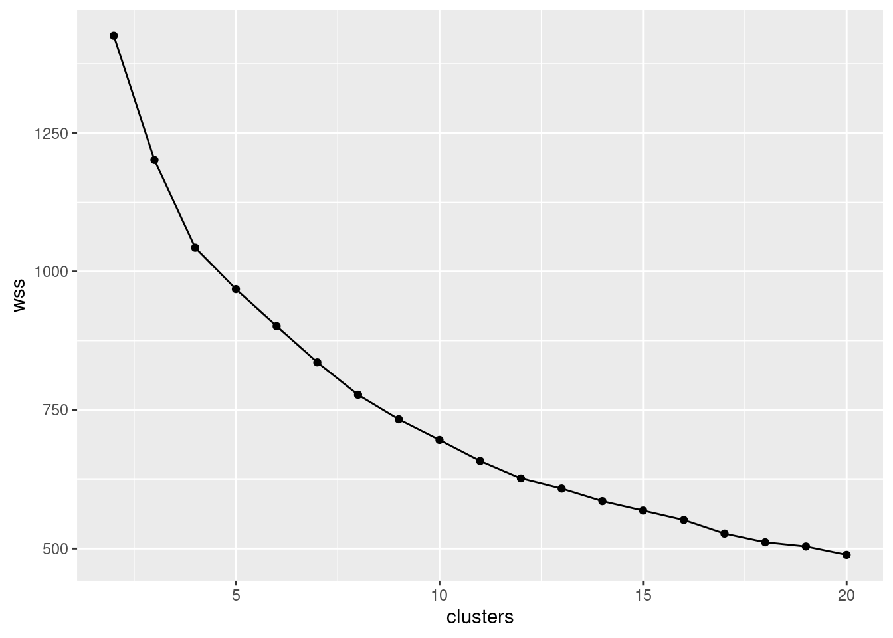
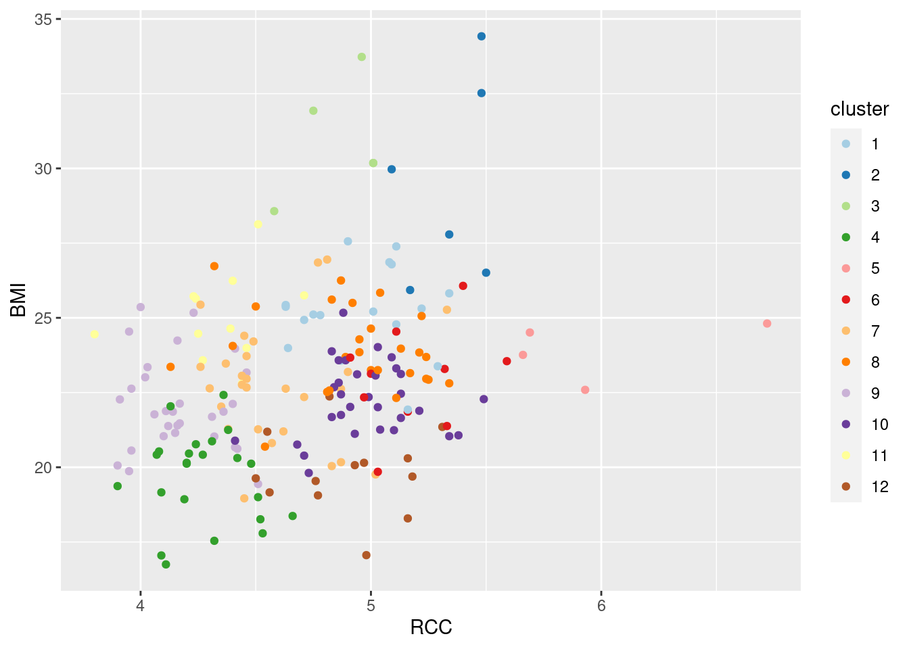
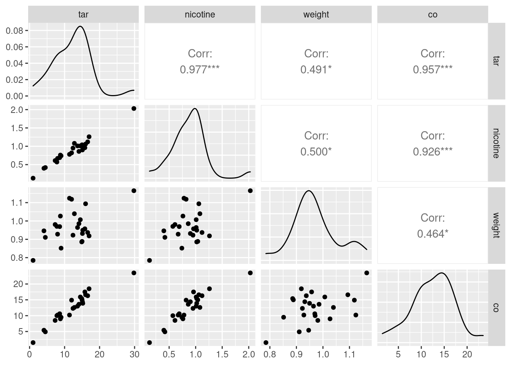
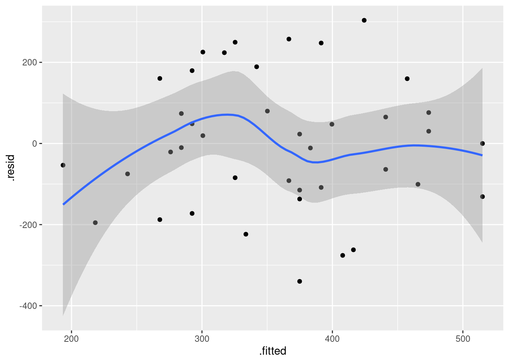
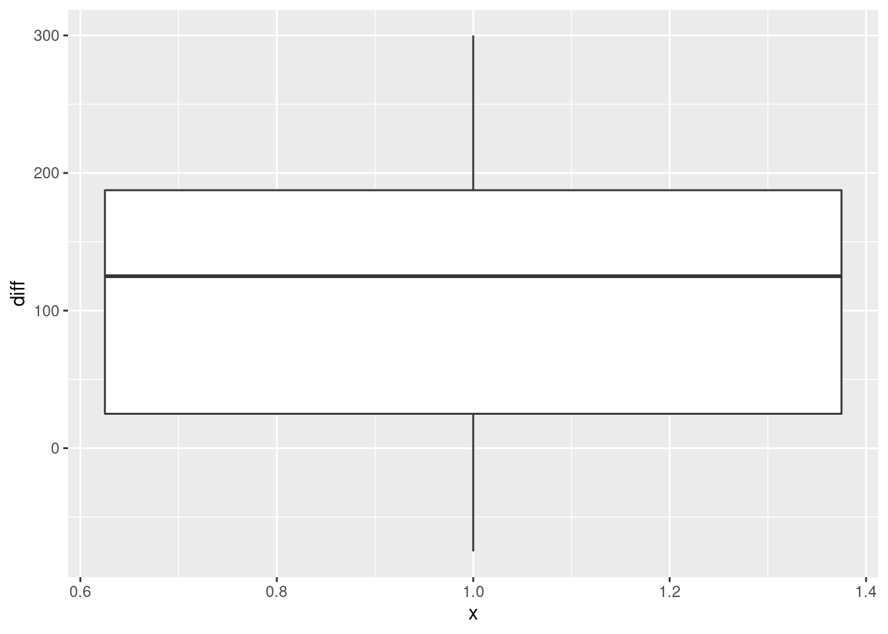
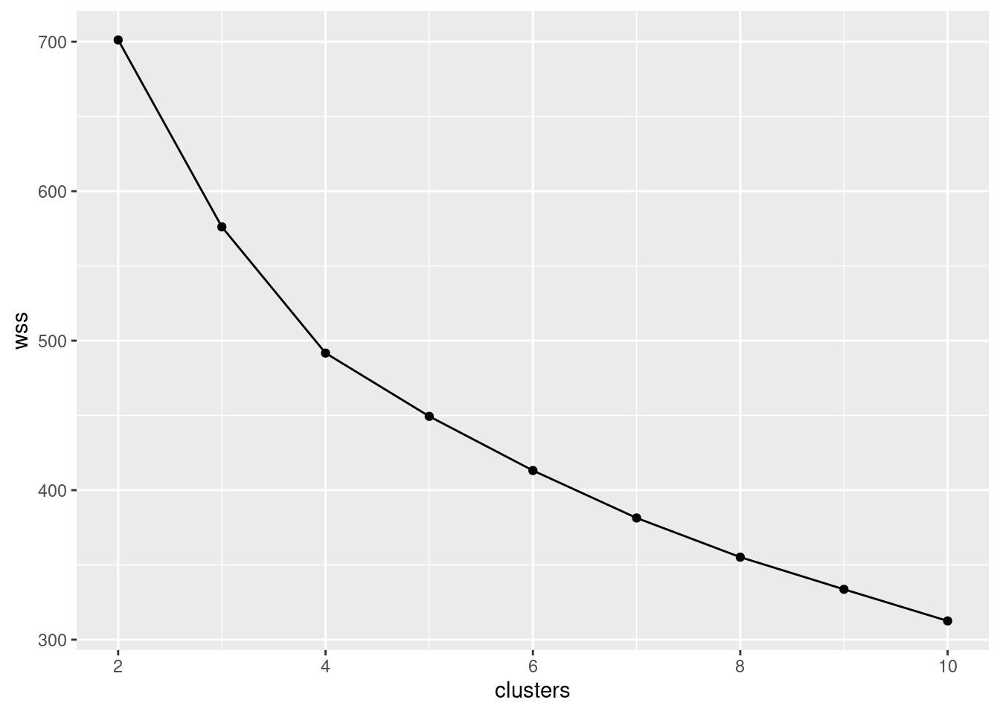
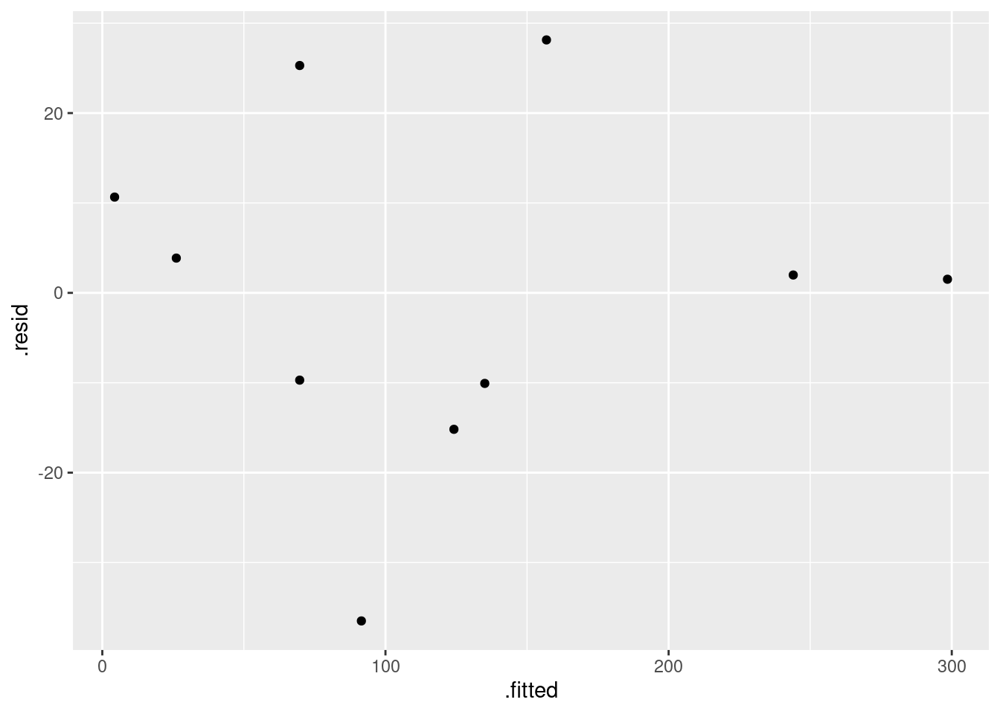
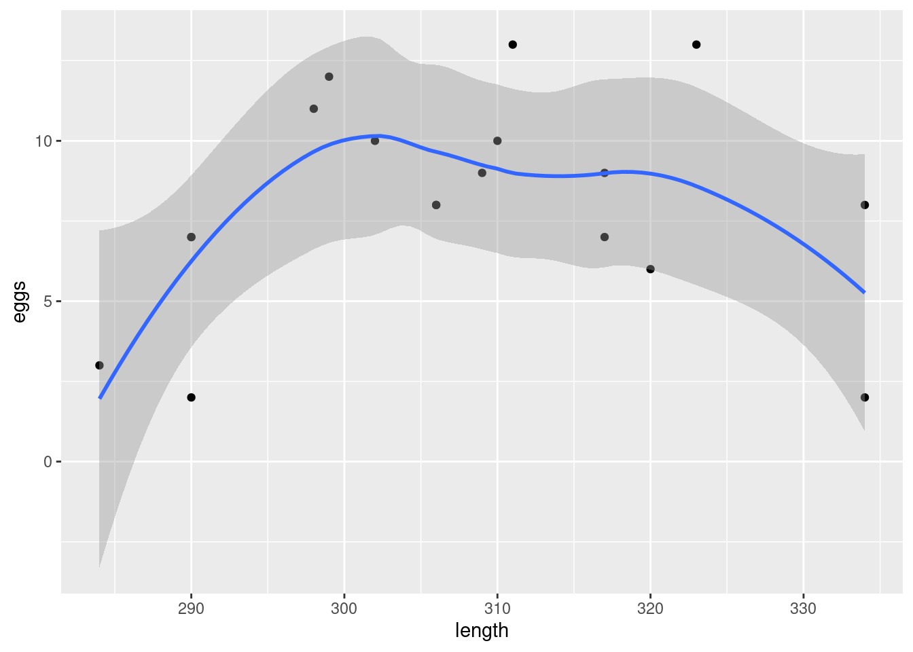
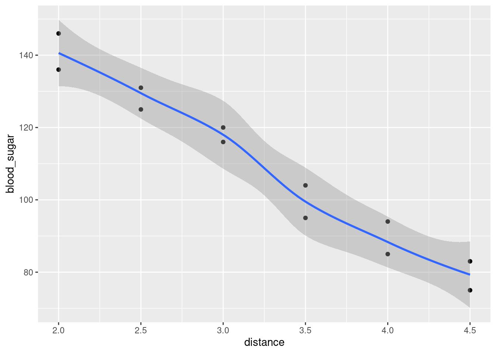
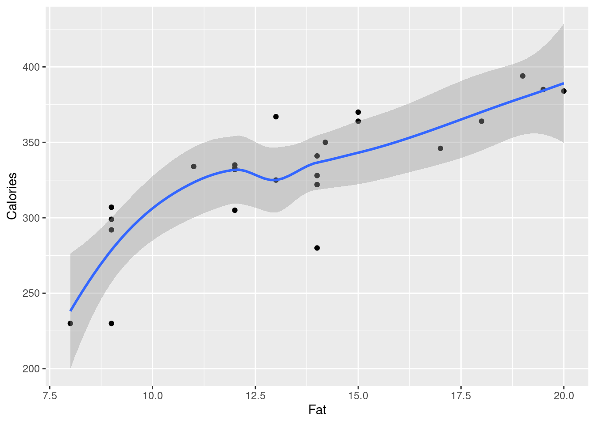

Chapter 16 Simple regression
16.1 Rainfall in California
The data in link are rainfall and other measurements for 30 weather stations in California. Our aim is to understand how well the annual rainfall at these stations (measured in inches) can be predicted from the other measurements, which are the altitude (in feet above sea level), the latitude (degrees north of the equator) and the distance from the coast (in miles).
Read the data into R. You’ll have to be careful here, since the values are space-delimited, but sometimes by more than one space, to make the columns line up.
read_table2, with filename or url, will read it in. One of the variables is calledrainfall, so as long as you do not call the data frame that, you should be safe.Make a boxplot of the rainfall figures, and explain why the values are reasonable. (A rainfall cannot be negative, and it is unusual for a annual rainfall to exceed 60 inches.) A
ggplotboxplot needs something on the \(x\)-axis: the number 1 will do.Plot
rainfallagainst each of the other quantitative variables (that is, notstation).Look at the relationship of each other variable with
rainfall. Justify the assertion thatlatitudeseems most strongly related withrainfall. Is that relationship positive or negative? linear? Explain briefly.Fit a regression with
rainfallas the response variable, andlatitudeas your explanatory variable. What are the intercept, slope and R-squared values? Is there a significant relationship betweenrainfalland your explanatory variable? What does that mean?Fit a multiple regression predicting
rainfallfrom all three of the other (quantitative) variables. Display the results. Comment is coming up later.What is the R-squared for the regression of the last part? How does that compare with the R-squared of your regression in part (e)?
What do you conclude about the importance of the variables that you did not include in your model in (e)? Explain briefly.
Make a suitable hypothesis test that the variables
altitudeandfromcoastsignificantly improve the prediction ofrainfallover the use oflatitudealone. What do you conclude?
16.2 Carbon monoxide in cigarettes
The (US) Federal Trade Commission assesses cigarettes according to their tar, nicotine and carbon monoxide contents. In a particular year, 25 brands were assessed. For each brand, the tar, nicotine and carbon monoxide (all in milligrams) were measured, along with the weight in grams. Our aim is to predict carbon monoxide from any or all of the other variables. The data are in link. These are aligned by column (except for the variable names), with more than one space between each column of data.
Read the data into R, and check that you have 25 observations and 4 variables.
Run a regression to predict carbon monoxide from the other variables, and obtain a summary of the output.
Which one of your explanatory variables would you remove from this regression? Explain (very) briefly. Go ahead and fit the regression without it, and describe how the change in R-squared from the regression in (b) was entirely predictable.
Fit a regression predicting carbon monoxide from
nicotineonly, and display the summary.nicotinewas far from being significant in the model of (c), and yet in the model of (d), it was strongly significant, and the R-squared value of (d) was almost as high as that of (c). What does this say about the importance ofnicotineas an explanatory variable? Explain, as briefly as you can manage.Make a “pairs plot”: that is, scatter plots between all pairs of variables. This can be done by feeding the whole data frame into
plot. This is a base graphics graph rather than a ggplot one, but it will do for our purposes. Do you see any strong relationships that do not includeco? Does that shed any light on the last part? Explain briefly (or “at length” if that’s how it comes out).
16.3 Maximal oxygen uptake in young boys
A physiologist wanted to understand the relationship between physical characteristics of pre-adolescent boys and their maximal oxygen uptake (millilitres of oxygen per kilogram of body weight). The data are in link for a random sample of 10 pre-adolescent boys. The variables are (with units):
uptake: Oxygen uptake (millitres of oxygen per kilogram of body weight)age: boy’s age (years)height: boy’s height (cm)weight: boy’s weight (kg)chest: chest depth (cm).
Read the data into R and confirm that you do indeed have 10 observations.
Fit a regression predicting oxygen uptake from all the other variables, and display the results.
(A one-mark question.) Would you say, on the evidence so far, that the regression fits well or badly? Explain (very) briefly.
It seems reasonable that an older boy should have a greater oxygen uptake, all else being equal. Is this supported by your output? Explain briefly.
It seems reasonable that a boy with larger weight should have larger lungs and thus a larger oxygen uptake. Is that what happens here? Explain briefly.
Fit a model that contains only the significant explanatory variables from your first regression. How do the R-squared values from the two regressions compare? (The last sentence asks for more or less the same thing as the next part. Answer it either here or there. Either place is good.)
How has R-squared changed between your two regressions? Describe what you see in a few words.
Carry out a test comparing the fit of your two regression models. What do you conclude, and therefore what recommendation would you make about the regression that would be preferred?
Obtain a table of correlations between all the variables in the data frame. Do this by feeding the whole data frame into
cor. We found that a regression predicting oxygen uptake from justheightwas acceptably good. What does your table of correlations say about why that is? (Hint: look for all the correlations that are large.)
16.4 Facebook friends and grey matter
Is there a relationship between the number of Facebook friends a person has, and the density of grey matter in the areas of the brain associated with social perception and associative memory? To find out, a 2012 study measured both of these variables for a sample of 40 students at City University in London (England). The data are at link. The grey matter density is on a \(z\)-score standardized scale. The values are separated by tabs.
The aim of this question is to produce an R Markdown report that contains your answers to the questions below.
You should aim to make your report flow smoothly, so that it would be pleasant for a grader to read, and can stand on its own as an analysis (rather than just being the answer to a question that I set you). Some suggestions: give your report a title and arrange it into sections with an Introduction; add a small amount of additional text here and there explaining what you are doing and why. I don’t expect you to spend a large amount of time on this, but I do hope you will make some effort. (My report came out to 4 Word pages.)
Read in the data and make a scatterplot for predicting the number of Facebook friends from the grey matter density. On your scatterplot, add a smooth trend.
Describe what you see on your scatterplot: is there a trend, and if so, what kind of trend is it? (Don’t get too taken in by the exact shape of your smooth trend.) Think “form, direction, strength”.
Fit a regression predicting the number of Facebook friends from the grey matter density, and display the output.
Is the slope of your regression line significantly different from zero? What does that mean, in the context of the data?
Are you surprised by the results of parts (b) and (d)? Explain briefly.
Obtain a scatterplot with the regression line on it.
Obtain a plot of the residuals from the regression against the fitted values, and comment briefly on it.
16.5 Endogenous nitrogen excretion in carp
A paper in Fisheries Science reported on variables that affect “endogenous nitrogen excretion” or ENE in carp raised in Japan. A number of carp were divided into groups based on body weight, and each group was placed in a different tank. The mean body weight of the carp placed in each tank was recorded. The carp were then fed a protein-free diet three times daily for a period of 20 days. At the end of the experiment, the amount of ENE in each tank was measured, in milligrams of total fish body weight per day. (Thus it should not matter that some of the tanks had more fish than others, because the scaling is done properly.)
For this question, write a report in R Markdown that answers the questions below and contains some narrative that describes your analysis. Create an HTML document from your R Markdown.
Read the data in from link. There are 10 tanks.
Create a scatterplot of ENE (response) against bodyweight (explanatory). Add a smooth trend to your plot.
Is there an upward or downward trend (or neither)? Is the relationship a line or a curve? Explain briefly.
Fit a straight line to the data, and obtain the R-squared for the regression.
Obtain a residual plot (residuals against fitted values) for this regression. Do you see any problems? If so, what does that tell you about the relationship in the data?
Fit a parabola to the data (that is, including an \(x\)-squared term). Compare the R-squared values for the models in this part and part (d). Does that suggest that the parabola model is an improvement here over the linear model?
Is the test for the slope coefficient for the squared term significant? What does this mean?
Make the scatterplot of part (b), but add the fitted curve. Describe any way in which the curve fails to fit well.
Obtain a residual plot for the parabola model. Do you see any problems with it? (If you do, I’m not asking you to do anything about them in this question, but I will.)
16.7 Predicting volume of wood in pine trees
In forestry, the financial value of a tree is the volume of wood that it contains. This is difficult to estimate while the tree is still standing, but the diameter is easy to measure with a tape measure (to measure the circumference) and a calculation involving \(\pi\), assuming that the cross-section of the tree is at least approximately circular. The standard measurement is “diameter at breast height” (that is, at the height of a human breast or chest), defined as being 4.5 feet above the ground.
Several pine trees had their diameter measured shortly before being cut down, and for each tree, the volume of wood was recorded. The data are in link. The diameter is in inches and the volume is in cubic inches. Is it possible to predict the volume of wood from the diameter?
Read the data into R and display the values (there are not very many).
Make a suitable plot.
Describe what you learn from your plot about the relationship between diameter and volume, if anything.
Fit a (linear) regression, predicting volume from diameter, and obtain the
summary. How would you describe the R-squared?Draw a graph that will help you decide whether you trust the linearity of this regression. What do you conclude? Explain briefly.
What would you guess would be the volume of a tree of diameter zero? Is that what the regression predicts? Explain briefly.
A simple way of modelling a tree’s shape is to pretend it is a cone, like this, but probably taller and skinnier:

with its base on the ground. What is the relationship between the diameter (at the base) and volume of a cone? (If you don’t remember, look it up. You’ll probably get a formula in terms of the radius, which you’ll have to convert. Cite the website you used.)
- Fit a regression model that predicts volume from diameter
according to the formula you obtained in the previous part. You can
assume that the trees in this data set are of similar heights, so
that the height can be treated as a constant.
Display the results.
16.8 Tortoise shells and eggs
A biologist measured the length of the carapace (shell) of female tortoises, and then x-rayed the tortoises to count how many eggs they were carrying. The length is measured in millimetres. The data are in link. The biologist is wondering what kind of relationship, if any, there is between the carapace length (as an explanatory variable) and the number of eggs (as a response variable).
Read in the data, and check that your values look reasonable.
Obtain a scatterplot, with a smooth trend, of the data.
The biologist expected that a larger tortoise would be able to carry more eggs. Is that what the scatterplot is suggesting? Explain briefly why or why not.
Fit a straight-line relationship and display the summary.
Add a squared term to your regression, fit that and display the summary.
Is a curve better than a line for these data? Justify your answer in two ways: by comparing a measure of fit, and by doing a suitable test of significance.
Make a residual plot for the straight line model: that is, plot the residuals against the fitted values. Does this echo your conclusions of the previous part? In what way? Explain briefly.
16.9 Roller coasters
A poll on the Discovery Channel asked people to nominate the best roller-coasters in the United States. We will examine the 10 roller-coasters that received the most votes. Two features of a roller-coaster that are of interest are the distance it drops from start to finish, measured here in feet Roller-coasters work by gravity, so there must be some drop. and the duration of the ride, measured in seconds. Is it true that roller-coasters with a bigger drop also tend to have a longer ride? The data are at link. These are not to be confused with what your mom insists that you place between your coffee mug and the table.
Read the data into R and verify that you have a sensible number of rows and columns.
Make a scatterplot of duration (response) against drop (explanatory), labelling each roller-coaster with its name in such a way that the labels do not overlap. Add a regression line to your plot.
Would you say that roller-coasters with a larger drop tend to have a longer ride? Explain briefly.
Find a roller-coaster that is unusual compared to the others. What about its combination of
dropanddurationis unusual?
16.10 Running and blood sugar
A diabetic wants to know how aerobic exercise affects his blood sugar. When his blood sugar reaches 170 (mg/dl), he goes out for a run at a pace of 10 minutes per mile. He runs different distances on different days. Each time he runs, he measures his blood sugar after the run. (The preferred blood sugar level is between 80 and 120 on this scale.) The data are in the file link. Our aim is to predict blood sugar from distance.
Read in the data and display the data frame that you read in.
Make a scatterplot and add a smooth trend to it.
Would you say that the relationship between blood sugar and running distance is approximately linear, or not? It is therefore reasonable to use a regression of blood sugar on distance? Explain briefly.
Fit a suitable regression, and obtain the regression output.
How would you interpret the slope? That is, what is the slope, and what does that mean about blood sugar and running distance?
Is there a (statistically) significant relationship between running distance and blood sugar? How do you know? Do you find this surprising, given what you have seen so far? Explain briefly.
This diabetic is planning to go for a 3-mile run tomorrow and a 5-mile run the day after. Obtain suitable 95% intervals that say what his blood sugar might be after each of these runs.
Which of your two intervals is longer? Does this make sense? Explain briefly.
16.11 Calories and fat in pizza
The file at link came from a spreadsheet of information about 24 brands of pizza: specifically, per 5-ounce serving, the number of calories, the grams of fat, and the cost (in US dollars). The names of the pizza brands are quite long. This file may open in a spreadsheet when you browse to the link, depending on your computer’s setup.
Read in the data and display at least some of the data frame. Are the variables of the right types? (In particular, why is the number of calories labelled one way and the cost labelled a different way?)
Make a scatterplot for predicting calories from the number of grams of fat. Add a smooth trend. What kind of relationship do you see, if any?
Fit a straight-line relationship, and display the intercept, slope, R-squared, etc. Is there a real relationship between the two variables, or is any apparent trend just chance?
Obtain a plot of the residuals against the fitted values for this regression. Does this indicate that there are any problems with this regression, or not? Explain briefly.
The research assistant in this study returns with two new brands of pizza (ones that were not in the original data). The fat content of a 5-ounce serving was 12 grams for the first brand and 20 grams for the second brand. For each of these brands of pizza, obtain a suitable 95% interval for the number of calories contained in a 5-ounce serving.
16.12 Where should the fire stations be?
In city planning, one major issue is where to locate fire stations. If a city has too many fire stations, it will spend too much on running them, but if it has too few, there may be unnecessary fire damage because the fire trucks take too long to get to the fire.
The first part of a study of this kind of issue is to understand the relationship between the distance from the fire station (measured in miles in our data set) and the amount of fire damage caused (measured in thousands of dollars). A city recorded the fire damage and distance from fire station for 15 residential fires (which you can take as a sample of “all possible residential fires in that city”). The data are in link.
Read in and display the data, verifying that you have the right number of rows and the right columns.
* Obtain a 95% confidence interval for the mean fire damage. (There is nothing here from STAD29, and your answer should have nothing to do with distance.)
Draw a scatterplot for predicting the amount of fire damage from the distance from the fire station. Add a smooth trend to your plot.
* Is there a relationship between distance from fire station and fire damage? Is it linear or definitely curved? How strong is it? Explain briefly.
Fit a regression predicting fire damage from distance. How is the R-squared consistent (or inconsistent) with your answer from part~(here)?
* Obtain a 95% confidence interval for the mean fire damage . (Note the contrast with part~(here).)
Compare the confidence intervals of parts (here) and (here). Specifically, compare their centres and their lengths, and explain briefly why the results make sense.
My solutions follow:
16.13 Rainfall in California
The data in link are rainfall and other measurements for 30 weather stations in California. Our aim is to understand how well the annual rainfall at these stations (measured in inches) can be predicted from the other measurements, which are the altitude (in feet above sea level), the latitude (degrees north of the equator) and the distance from the coast (in miles).
- Read the data into R. You’ll have to be careful here, since the
values are space-delimited, but sometimes by more than one space, to
make the columns line up.
read_table2, with filename or url, will read it in. One of the variables is calledrainfall, so as long as you do not call the data frame that, you should be safe.
Solution
I used rains as the name of my data frame:
##
## ── Column specification ──────────────────────────────────────────────────────────────────────────────────────────────────────────────────────────────────────────────────────────────────────
## cols(
## station = col_character(),
## rainfall = col_double(),
## altitude = col_double(),
## latitude = col_double(),
## fromcoast = col_double()
## )I have the right number of rows and columns.
There is also read_table, but that requires all the
columns, including the header row, to be lined up. You can try that
here and see how it fails.
I don’t need you to investigate the data yet (that happens in the next part), but this is interesting (to me):
Some of the station names are two words, but they have been smooshed
into one word, so that read_table2 will recognize them as a
single thing. Someone had already done that for us, so I didn’t even
have to do it myself.
If the station names had been two genuine words, a .csv would
probably have been the best choice (the actual data values being
separated by commas then, and not spaces).
\(\blacksquare\)
- Make a boxplot of the rainfall figures, and explain why the
values are reasonable. (A rainfall cannot be negative, and it is
unusual for a annual rainfall to exceed 60 inches.) A
ggplotboxplot needs something on the \(x\)-axis: the number 1 will do.
Solution

There is only one rainfall over 60 inches, and the smallest one is close to zero but positive, so that is good.
Another possible plot here is a histogram, since there is only one quantitative variable:

This clearly shows the rainfall value above 60 inches, but some other things are less clear: are those two rainfall values around 50 inches above or below 50, and are those six rainfall values near zero actually above zero? Extra: What stations have those extreme values? Should you wish to find out:
This is a place right on the Pacific coast, almost up into Oregon (it’s almost the northernmost of all the stations). So it makes sense that it would have a high rainfall, if anywhere does. (If you know anything about rainy places, you’ll probably think of Vancouver and Seattle, in the Pacific Northwest.) Here it is: link. Which station has less than 2 inches of annual rainfall?
The name of the station is a clue: this one is in the desert. So you’d expect very little rain. Its altitude is negative, so it’s actually below sea level. This is correct. Here is where it is: link.
\(\blacksquare\)
- Plot
rainfallagainst each of the other quantitative variables (that is, notstation).
Solution
That is, altitude, latitude and
fromcoast. The obvious way to do this (perfectly
acceptable) is one plot at a time:

and finally
You can add a smooth trend to these if you want. Up to you. Just the points is fine with me.
Here is a funky way to get all three plots in one shot:
rains %>%
pivot_longer(altitude:fromcoast, names_to="xname",values_to="x") %>%
ggplot(aes(x=x,y=rainfall))+geom_point()+
facet_wrap(~xname,scales="free")
This always seems extraordinarily strange if you haven’t run into it before. The strategy is to put all the \(x\)-variables you want to plot into one column and then plot your \(y\) against the \(x\)-column. Thus: make a column of all the \(x\)’s glued together, labelled by which \(x\) they are, then plot \(y\) against \(x\) but make a different sub-plot or “facet” for each different \(x\)-name. The last thing is that each \(x\) is measured on a different scale, and unless we take steps, all the sub-plots will have the same scale on each axis, which we don’t want.
I’m not sure I like how it came out, with three very tall
plots. facet_wrap can also take an nrow or an
ncol, which tells it how many rows or columns to use for the
display. Here, for example, two columns because I thought three was
too many:
rains %>%
pivot_longer(altitude:fromcoast, names_to="xname",values_to="x") %>%
ggplot(aes(x=x,y=rainfall))+geom_point()+
facet_wrap(~xname,scales="free",ncol=2)Now, the three plots have come out about square, or at least “landscape”, which I like a lot better.
\(\blacksquare\)
- Look at the relationship of each other variable with
rainfall. Justify the assertion thatlatitudeseems most strongly related withrainfall. Is that relationship positive or negative? linear? Explain briefly.
Solution
Let’s look at the three variables in turn:
altitude: not much of anything. The stations near sea level have rainfall all over the place, though the three highest-altitude stations have the three highest rainfalls apart from Crescent City.latitude: there is a definite upward trend here, in that stations further north (higher latitude) are likely to have a higher rainfall. I’d call this trend linear (or, not obviously curved), though the two most northerly stations have one higher and one much lower rainfall than you’d expect.fromcoast: this is a weak downward trend, though the trend is spoiled by those three stations about 150 miles from the coast that have more than 40 inches of rainfall.
Out of those, only latitude seems to have any meaningful
relationship with rainfall.
\(\blacksquare\)
- Fit a regression with
rainfallas the response variable, andlatitudeas your explanatory variable. What are the intercept, slope and R-squared values? Is there a significant relationship betweenrainfalland your explanatory variable? What does that mean?
Solution
Save your lm into a
variable, since it will get used again later:
##
## Call:
## lm(formula = rainfall ~ latitude, data = rains)
##
## Residuals:
## Min 1Q Median 3Q Max
## -27.297 -7.956 -2.103 6.082 38.262
##
## Coefficients:
## Estimate Std. Error t value Pr(>|t|)
## (Intercept) -113.3028 35.7210 -3.172 0.00366 **
## latitude 3.5950 0.9623 3.736 0.00085 ***
## ---
## Signif. codes: 0 '***' 0.001 '**' 0.01 '*' 0.05 '.' 0.1 ' ' 1
##
## Residual standard error: 13.82 on 28 degrees of freedom
## Multiple R-squared: 0.3326, Adjusted R-squared: 0.3088
## F-statistic: 13.96 on 1 and 28 DF, p-value: 0.0008495My intercept is \(-113.3\), slope is \(3.6\) and R-squared is \(0.33\) or 33%. (I want you to pull these numbers out of the output and round them off to something sensible.) The slope is significantly nonzero, its P-value being 0.00085: rainfall really does depend on latitude, although not strongly so.
Extra: Of course, I can easily do the others as well, though you don’t have to:
##
## Call:
## lm(formula = rainfall ~ fromcoast, data = rains)
##
## Residuals:
## Min 1Q Median 3Q Max
## -15.240 -9.431 -6.603 2.871 51.147
##
## Coefficients:
## Estimate Std. Error t value Pr(>|t|)
## (Intercept) 23.77306 4.61296 5.154 1.82e-05 ***
## fromcoast -0.05039 0.04431 -1.137 0.265
## ---
## Signif. codes: 0 '***' 0.001 '**' 0.01 '*' 0.05 '.' 0.1 ' ' 1
##
## Residual standard error: 16.54 on 28 degrees of freedom
## Multiple R-squared: 0.04414, Adjusted R-squared: 0.01
## F-statistic: 1.293 on 1 and 28 DF, p-value: 0.2651Here, the intercept is 23.8, the slope is \(-0.05\) and R-squared is a dismal 0.04 (4%). This is a way of seeing that this relationship is really weak, and it doesn’t even have a curve to the trend or anything that would compensate for this. I looked at the scatterplot again and saw that if it were not for the point bottom right which is furthest from the coast and has almost no rainfall, there would be almost no trend at all. The slope here is not significantly different from zero, with a P-value of 0.265.
Finally:
##
## Call:
## lm(formula = rainfall ~ altitude, data = rains)
##
## Residuals:
## Min 1Q Median 3Q Max
## -20.620 -8.479 -2.729 4.555 58.271
##
## Coefficients:
## Estimate Std. Error t value Pr(>|t|)
## (Intercept) 16.514799 3.539141 4.666 6.9e-05 ***
## altitude 0.002394 0.001428 1.676 0.105
## ---
## Signif. codes: 0 '***' 0.001 '**' 0.01 '*' 0.05 '.' 0.1 ' ' 1
##
## Residual standard error: 16.13 on 28 degrees of freedom
## Multiple R-squared: 0.09121, Adjusted R-squared: 0.05875
## F-statistic: 2.81 on 1 and 28 DF, p-value: 0.1048The intercept is 16.5, the slope is 0.002 and the R-squared is 0.09 or 9%, also terrible. The P-value is 0.105, which is not small enough to be significant.
So it looks as if it’s only latitude that
has any impact at all. This is the only explanatory variable with a
significantly nonzero slope. On its own, at least.
\(\blacksquare\)
- Fit a multiple regression predicting
rainfallfrom all three of the other (quantitative) variables. Display the results. Comment is coming up later.
Solution
This, then:
##
## Call:
## lm(formula = rainfall ~ latitude + altitude + fromcoast, data = rains)
##
## Residuals:
## Min 1Q Median 3Q Max
## -28.722 -5.603 -0.531 3.510 33.317
##
## Coefficients:
## Estimate Std. Error t value Pr(>|t|)
## (Intercept) -1.024e+02 2.921e+01 -3.505 0.001676 **
## latitude 3.451e+00 7.949e-01 4.342 0.000191 ***
## altitude 4.091e-03 1.218e-03 3.358 0.002431 **
## fromcoast -1.429e-01 3.634e-02 -3.931 0.000559 ***
## ---
## Signif. codes: 0 '***' 0.001 '**' 0.01 '*' 0.05 '.' 0.1 ' ' 1
##
## Residual standard error: 11.1 on 26 degrees of freedom
## Multiple R-squared: 0.6003, Adjusted R-squared: 0.5542
## F-statistic: 13.02 on 3 and 26 DF, p-value: 2.205e-05\(\blacksquare\)
- What is the R-squared for the regression of the last part? How does that compare with the R-squared of your regression in part (e)?
Solution
The R-squared is 0.60 (60%), which is quite a bit bigger than the R-squared of 0.33 (33%) we got back in (e).
\(\blacksquare\)
- What do you conclude about the importance of the variables that you did not include in your model in (e)? Explain briefly.
Solution
Both variables altitude and fromcoast are
significant in this regression, so they have something to add over and above latitude when it comes to
predicting rainfall, even though (and this seems odd) they have no
apparent relationship with rainfall on their own.
Another way to say this is that the three variables work together
as a team to predict rainfall, and together they do much better
than any one of them can do by themselves.
This also goes to show that the scatterplots we began
with don’t get to the heart of multi-variable relationships,
because they are only looking at the variables two at a time.
\(\blacksquare\)
- Make a suitable hypothesis test that the variables
altitudeandfromcoastsignificantly improve the prediction ofrainfallover the use oflatitudealone. What do you conclude?
Solution
This calls for anova. Feed this two fitted models,
smaller (fewer explanatory variables) first. The null hypothesis
is that the two models are equally good (so we should go with the
smaller); the alternative is that the larger model is better, so
that the extra complication is worth it:
The P-value is small, so we reject the null in favour of the
alternative: the regression with all three explanatory variables fits
better than the one with just latitude, so the bigger model
is the one we should go with.
If you have studied these things: this one is a “multiple-partial \(F\)-test”, for testing the combined significance of more than one \(x\) but less than all the \(x\)’s. If you had just one \(x\), you’d use a \(t\)-test for its slope, and if you were testing all the \(x\)’s, you’d use the global \(F\)-test that appears in the regression output.
\(\blacksquare\)
16.14 Carbon monoxide in cigarettes
The (US) Federal Trade Commission assesses cigarettes according to their tar, nicotine and carbon monoxide contents. In a particular year, 25 brands were assessed. For each brand, the tar, nicotine and carbon monoxide (all in milligrams) were measured, along with the weight in grams. Our aim is to predict carbon monoxide from any or all of the other variables. The data are in link. These are aligned by column (except for the variable names), with more than one space between each column of data.
- Read the data into R, and check that you have 25 observations and 4 variables.
Solution
This specification calls for read_table2:
##
## ── Column specification ──────────────────────────────────────────────────────────────────────────────────────────────────────────────────────────────────────────────────────────────────────
## cols(
## tar = col_double(),
## nicotine = col_double(),
## weight = col_double(),
## co = col_double()
## )Yes, I have 25 observations on 4 variables indeed.
read_delim won’t work (try it and see what happens), because
that would require the values to be separated by exactly one space.
\(\blacksquare\)
- Run a regression to predict carbon monoxide from the other variables, and obtain a summary of the output.
Solution
The word “summary” is meant to be a big clue that
summary is what you need:
##
## Call:
## lm(formula = co ~ tar + nicotine + weight, data = cigs)
##
## Residuals:
## Min 1Q Median 3Q Max
## -2.89261 -0.78269 0.00428 0.92891 2.45082
##
## Coefficients:
## Estimate Std. Error t value Pr(>|t|)
## (Intercept) 3.2022 3.4618 0.925 0.365464
## tar 0.9626 0.2422 3.974 0.000692 ***
## nicotine -2.6317 3.9006 -0.675 0.507234
## weight -0.1305 3.8853 -0.034 0.973527
## ---
## Signif. codes: 0 '***' 0.001 '**' 0.01 '*' 0.05 '.' 0.1 ' ' 1
##
## Residual standard error: 1.446 on 21 degrees of freedom
## Multiple R-squared: 0.9186, Adjusted R-squared: 0.907
## F-statistic: 78.98 on 3 and 21 DF, p-value: 1.329e-11\(\blacksquare\)
- Which one of your explanatory variables would you remove from this regression? Explain (very) briefly. Go ahead and fit the regression without it, and describe how the change in R-squared from the regression in (b) was entirely predictable.
Solution
First, the \(x\)-variable to remove. The obvious candidate is
weight, since it has easily the highest, and clearly
non-significant, P-value. So, out it comes:
##
## Call:
## lm(formula = co ~ tar + nicotine, data = cigs)
##
## Residuals:
## Min 1Q Median 3Q Max
## -2.89941 -0.78470 -0.00144 0.91585 2.43064
##
## Coefficients:
## Estimate Std. Error t value Pr(>|t|)
## (Intercept) 3.0896 0.8438 3.662 0.001371 **
## tar 0.9625 0.2367 4.067 0.000512 ***
## nicotine -2.6463 3.7872 -0.699 0.492035
## ---
## Signif. codes: 0 '***' 0.001 '**' 0.01 '*' 0.05 '.' 0.1 ' ' 1
##
## Residual standard error: 1.413 on 22 degrees of freedom
## Multiple R-squared: 0.9186, Adjusted R-squared: 0.9112
## F-statistic: 124.1 on 2 and 22 DF, p-value: 1.042e-12R-squared has dropped from 0.9186 to 0.9186! That is, taking
out weight has not just had a minimal effect on R-squared;
it’s not changed R-squared at all. This is because weight was
so far from being significant: it literally had nothing to add.
Another way of achieving the same thing is via the function
update, which takes a fitted model object and describes the
change that you want to make:
##
## Call:
## lm(formula = co ~ tar + nicotine, data = cigs)
##
## Residuals:
## Min 1Q Median 3Q Max
## -2.89941 -0.78470 -0.00144 0.91585 2.43064
##
## Coefficients:
## Estimate Std. Error t value Pr(>|t|)
## (Intercept) 3.0896 0.8438 3.662 0.001371 **
## tar 0.9625 0.2367 4.067 0.000512 ***
## nicotine -2.6463 3.7872 -0.699 0.492035
## ---
## Signif. codes: 0 '***' 0.001 '**' 0.01 '*' 0.05 '.' 0.1 ' ' 1
##
## Residual standard error: 1.413 on 22 degrees of freedom
## Multiple R-squared: 0.9186, Adjusted R-squared: 0.9112
## F-statistic: 124.1 on 2 and 22 DF, p-value: 1.042e-12This can be shorter than describing the whole model again, as you do
with the cigs.2 version of lm. The syntax is that
you first specify a “base” fitted model object that you’re going to
update. Because the model cigs.1 contains all the information
about the kind of model it is, and which data frame the data come
from, R already knows that this is a linear
multiple regression and which \(x\)’s it contains. The second thing to describe is the change from
the “base”. In this case, we want to use the same response variable
and all the same explanatory variables that we had before, except for
weight. This is specified by a special kind of model formula
where . means “whatever was there before”: in English,
“same response and same explanatories except take out weight”.
\(\blacksquare\)
- Fit a regression predicting carbon monoxide from
nicotineonly, and display the summary.
Solution
As you would guess:
##
## Call:
## lm(formula = co ~ nicotine, data = cigs)
##
## Residuals:
## Min 1Q Median 3Q Max
## -3.3273 -1.2228 0.2304 1.2700 3.9357
##
## Coefficients:
## Estimate Std. Error t value Pr(>|t|)
## (Intercept) 1.6647 0.9936 1.675 0.107
## nicotine 12.3954 1.0542 11.759 3.31e-11 ***
## ---
## Signif. codes: 0 '***' 0.001 '**' 0.01 '*' 0.05 '.' 0.1 ' ' 1
##
## Residual standard error: 1.828 on 23 degrees of freedom
## Multiple R-squared: 0.8574, Adjusted R-squared: 0.8512
## F-statistic: 138.3 on 1 and 23 DF, p-value: 3.312e-11\(\blacksquare\)
nicotinewas far from being significant in the model of (c), and yet in the model of (d), it was strongly significant, and the R-squared value of (d) was almost as high as that of (c). What does this say about the importance ofnicotineas an explanatory variable? Explain, as briefly as you can manage.
Solution
What this says is that you cannot say anything about the
“importance” of nicotine without also describing the
context that you’re talking about. By itself,
nicotine is important, but , nicotine is not
important: precisely, it now has nothing to add over and above
the predictive value that tar has. You might guess that
this is because tar and nicotine are
“saying the same thing” in some fashion.
We’ll explore that in a moment.
\(\blacksquare\)
- Make a “pairs plot”: that is, scatter plots between all
pairs of variables. This can be done by feeding the whole data frame
into
plot. This is a base graphics graph rather than a ggplot one, but it will do for our purposes. Do you see any strong relationships that do not includeco? Does that shed any light on the last part? Explain briefly (or “at length” if that’s how it comes out).
Solution
Plot the entire data frame:

We’re supposed to ignore co, but I comment that strong
relationships between co and both of tar and
nicotine show up here, along with weight being
at most weakly related to anything else.
That leaves the relationship of tar and nicotine
with each other. That also looks like a strong linear trend. When you
have correlations between explanatory variables, it is called
“multicollinearity”.
Having correlated \(x\)’s is
trouble. Here is where we find out why. The problem is that when
co is large, nicotine is large, and a large value of
tar will come along with it. So we don’t know whether a large
value of co is caused by a large value of tar or a
large value of nicotine: there is no way to separate out
their effects because in effect they are “glued together”.
You might know of this effect (in an experimental design context) as
“confounding”: the effect of tar on co is
confounded with the effect of nicotine on co, and
you can’t tell which one deserves the credit for predicting co.
If you were able to design an experiment here, you could (in
principle) manufacture a bunch of cigarettes with high tar; some of
them would have high nicotine and some would have low. Likewise for
low tar. Then the
correlation between nicotine and tar would go away,
their effects on co would no longer be confounded, and you
could see unambiguously which one of the variables deserves credit for
predicting co. Or maybe it depends on both, genuinely, but at
least then you’d know.
We, however, have an observational study, so we have to make do with the data we have. Confounding is one of the risks we take when we work with observational data.
This was a “base graphics” plot. There is a way of doing a
ggplot-style “pairs plot”, as this is called, thus:
## Registered S3 method overwritten by 'GGally':
## method from
## +.gg ggplot2
As ever, install.packages first, in the likely event that you
don’t have this package installed yet. Once you do, though, I think
this is a nicer way to get a pairs plot.
This plot is a bit more sophisticated: instead of just having the
scatterplots of the pairs of variables in the row and column, it uses
the diagonal to show a “kernel density” (a smoothed-out histogram),
and upper-right it shows the correlation between each pair of
variables. The three correlations between co, tar
and nicotine are clearly the highest.
If you want only some of the columns to appear in your pairs plot,
select them first, and then pass that data frame into
ggpairs. Here, we found that weight was not
correlated with anything much, so we can take it out and then make a
pairs plot of the other variables:
The three correlations that remain are all very high, which is entirely consistent with the strong linear relationships that you see bottom left.
\(\blacksquare\)
16.15 Maximal oxygen uptake in young boys
A physiologist wanted to understand the relationship between physical characteristics of pre-adolescent boys and their maximal oxygen uptake (millilitres of oxygen per kilogram of body weight). The data are in link for a random sample of 10 pre-adolescent boys. The variables are (with units):
uptake: Oxygen uptake (millitres of oxygen per kilogram of body weight)age: boy’s age (years)height: boy’s height (cm)weight: boy’s weight (kg)chest: chest depth (cm).
- Read the data into R and confirm that you do indeed have 10 observations.
Solution
##
## ── Column specification ──────────────────────────────────────────────────────────────────────────────────────────────────────────────────────────────────────────────────────────────────────
## cols(
## uptake = col_double(),
## age = col_double(),
## height = col_double(),
## weight = col_double(),
## chest = col_double()
## )10 boys (rows) indeed.
\(\blacksquare\)
- Fit a regression predicting oxygen uptake from all the other variables, and display the results.
Solution
Fitting four explanatory variables with only ten observations is likely to be pretty shaky, but we press ahead regardless:
##
## Call:
## lm(formula = uptake ~ age + height + weight + chest, data = boys)
##
## Residuals:
## 1 2 3 4 5 6 7 8
## -0.020697 0.019741 -0.003649 0.038470 -0.023639 -0.026026 0.050459 -0.014380
## 9 10
## 0.004294 -0.024573
##
## Coefficients:
## Estimate Std. Error t value Pr(>|t|)
## (Intercept) -4.774739 0.862818 -5.534 0.002643 **
## age -0.035214 0.015386 -2.289 0.070769 .
## height 0.051637 0.006215 8.308 0.000413 ***
## weight -0.023417 0.013428 -1.744 0.141640
## chest 0.034489 0.085239 0.405 0.702490
## ---
## Signif. codes: 0 '***' 0.001 '**' 0.01 '*' 0.05 '.' 0.1 ' ' 1
##
## Residual standard error: 0.03721 on 5 degrees of freedom
## Multiple R-squared: 0.9675, Adjusted R-squared: 0.9415
## F-statistic: 37.2 on 4 and 5 DF, p-value: 0.0006513\(\blacksquare\)
- (A one-mark question.) Would you say, on the evidence so far, that the regression fits well or badly? Explain (very) briefly.
Solution
R-squared of 0.97 (97%) is very high, so I’d say this regression fits very well. That’s all. I said “on the evidence so far” to dissuade you from overthinking this, or thinking that you needed to produce some more evidence. That, plus the fact that this was only one mark.
\(\blacksquare\)
- It seems reasonable that an older boy should have a greater oxygen uptake, all else being equal. Is this supported by your output? Explain briefly.
Solution
If an older boy has greater oxygen uptake (the “all else equal” was a hint),
the slope of age should be
positive. It is not: it is \(-0.035\), so it is suggesting
(all else equal) that a greater age goes with a
smaller oxygen uptake.
The reason why this happens (which you didn’t need, but
you can include it if you like) is that age has a
non-small P-value of 0.07, so that the age slope
is not significantly different from zero. With all the
other variables, age has nothing to add
over and above them, and we could therefore remove it.
\(\blacksquare\)
- It seems reasonable that a boy with larger weight should have larger lungs and thus a larger oxygen uptake. Is that what happens here? Explain briefly.
Solution
Look at the P-value for weight. This is 0.14,
not small, and so a boy with larger weight does not have
a significantly larger oxygen uptake, all else
equal. (The slope for weight is not
significantly different from zero either.)
I emphasized “statistically significant” to remind you
that this means to do a test and get a P-value.
\(\blacksquare\)
- Fit a model that contains only the significant explanatory variables from your first regression. How do the R-squared values from the two regressions compare? (The last sentence asks for more or less the same thing as the next part. Answer it either here or there. Either place is good.)
Solution
Only height is significant, so that’s the
only explanatory variable we need to keep. I would
just do the regression straight rather than using
update here:
##
## Call:
## lm(formula = uptake ~ height, data = boys)
##
## Residuals:
## Min 1Q Median 3Q Max
## -0.069879 -0.033144 0.001407 0.009581 0.084012
##
## Coefficients:
## Estimate Std. Error t value Pr(>|t|)
## (Intercept) -3.843326 0.609198 -6.309 0.000231 ***
## height 0.040718 0.004648 8.761 2.26e-05 ***
## ---
## Signif. codes: 0 '***' 0.001 '**' 0.01 '*' 0.05 '.' 0.1 ' ' 1
##
## Residual standard error: 0.05013 on 8 degrees of freedom
## Multiple R-squared: 0.9056, Adjusted R-squared: 0.8938
## F-statistic: 76.75 on 1 and 8 DF, p-value: 2.258e-05If you want, you can use update here, which looks like this:
##
## Call:
## lm(formula = uptake ~ height, data = boys)
##
## Residuals:
## Min 1Q Median 3Q Max
## -0.069879 -0.033144 0.001407 0.009581 0.084012
##
## Coefficients:
## Estimate Std. Error t value Pr(>|t|)
## (Intercept) -3.843326 0.609198 -6.309 0.000231 ***
## height 0.040718 0.004648 8.761 2.26e-05 ***
## ---
## Signif. codes: 0 '***' 0.001 '**' 0.01 '*' 0.05 '.' 0.1 ' ' 1
##
## Residual standard error: 0.05013 on 8 degrees of freedom
## Multiple R-squared: 0.9056, Adjusted R-squared: 0.8938
## F-statistic: 76.75 on 1 and 8 DF, p-value: 2.258e-05This doesn’t go quite so smoothly here because there are three variables being removed, and it’s a bit of work to type them all.
\(\blacksquare\)
- How has R-squared changed between your two regressions? Describe what you see in a few words.
Solution
R-squared has dropped by a bit, from 97% to 91%. (Make your own call: pull out the two R-squared numbers, and say a word or two about how they compare. I don’t much mind what you say: “R-squared has decreased (noticeably)”, “R-squared has hardly changed”. But say something.)
\(\blacksquare\)
- Carry out a test comparing the fit of your two regression models. What do you conclude, and therefore what recommendation would you make about the regression that would be preferred?
Solution
The word “test” again implies something that produces a P-value with a
null hypothesis that you might reject. In this case, the test that
compares two models differing by more than one \(x\) uses
anova, testing the null hypothesis that the two regressions
are equally good, against the alternative that the bigger (first) one
is better. Feed anova two fitted model objects, smaller first:
This P-value of 0.123 is not small, so we do not reject the null
hypothesis. There is not a significant difference in fit between the
two models. Therefore, we should go with the smaller model
boys.2 because it is simpler.
That drop in R-squared from 97% to 91% was, it turns out, not significant: the three extra variables could have produced a change in R-squared like that, even if they were worthless. Recall that adding \(x\)’s to a regression will always make R-squared go up, even if they are just random noise.
If you have learned about “adjusted R-squared”, you might recall
that this is supposed to go down only if the variables you took
out should not have been taken out. But adjusted R-squared goes down
here as well, from 94% to 89% (not quite as much, therefore). What
happens is that adjusted R-squared is rather more relaxed about
keeping variables than the anova \(F\)-test is; if we had used
an \(\alpha\) of something like 0.10, the decision between the two
models would have been a lot closer, and this is reflected in the
adjusted R-squared values.
\(\blacksquare\)
- Obtain a table of correlations between all
the variables in the data frame. Do this by feeding
the whole data frame into
cor. We found that a regression predicting oxygen uptake from justheightwas acceptably good. What does your table of correlations say about why that is? (Hint: look for all the correlations that are large.)
Solution
Correlations first:
## uptake age height weight chest
## uptake 1.0000000 0.1361907 0.9516347 0.6576883 0.7182659
## age 0.1361907 1.0000000 0.3274830 0.2307403 0.1657523
## height 0.9516347 0.3274830 1.0000000 0.7898252 0.7909452
## weight 0.6576883 0.2307403 0.7898252 1.0000000 0.8809605
## chest 0.7182659 0.1657523 0.7909452 0.8809605 1.0000000The correlations with age are all on the low side, but all
the other correlations are high, not just between uptake and the
other variables, but between the explanatory variables as well.
Why is this helpful in understanding what’s going on? Well, imagine a
boy with large height (a tall one). The regression boys.2
says that this alone is enough to predict that such a boy’s oxygen
uptake is likely to be large, since the slope is positive. But the
correlations tell you more: a boy with large height is also (somewhat)
likely to be older (have large age), heavier (large weight) and to have
larger chest cavity. So oxygen uptake does depend on those other
variables as well, but once you know height you can make a
good guess at their values; you don’t need to know them.
Further remarks: age has a low correlation with
uptake, so its non-significance earlier appears to be
“real”: it really does have nothing extra to say, because the other
variables have a stronger link with uptake than
age. Height, however, seems to be the best way of relating
oxygen uptake to any of the other variables. I think the suppositions
from earlier about relating oxygen uptake to “bigness”
This is not, I don’t think, a real word, but I mean size emphasizing how big a boy is generally, rather than how small. in some sense
are actually sound, but age and weight and chest capture
“bigness” worse than height does. Later, when you learn about
Principal Components, you will see that the first principal component,
the one that best captures how the variables vary together, is often
“bigness” in some sense.
Another way to think about these things is via pairwise
scatterplots. The nicest way to produce these is via ggpairs
from package GGally:

A final remark: with five variables, we really ought to have more than ten observations (something like 50 would be better). But with more observations and the same correlation structure, the same issues would come up again, so the question would not be materially changed.
\(\blacksquare\)
16.16 Facebook friends and grey matter
Is there a relationship between the number of Facebook friends a person has, and the density of grey matter in the areas of the brain associated with social perception and associative memory? To find out, a 2012 study measured both of these variables for a sample of 40 students at City University in London (England). The data are at link. The grey matter density is on a \(z\)-score standardized scale. The values are separated by tabs.
The aim of this question is to produce an R Markdown report that contains your answers to the questions below.
You should aim to make your report flow smoothly, so that it would be pleasant for a grader to read, and can stand on its own as an analysis (rather than just being the answer to a question that I set you). Some suggestions: give your report a title and arrange it into sections with an Introduction; add a small amount of additional text here and there explaining what you are doing and why. I don’t expect you to spend a large amount of time on this, but I do hope you will make some effort. (My report came out to 4 Word pages.)
- Read in the data and make a scatterplot for predicting the number of Facebook friends from the grey matter density. On your scatterplot, add a smooth trend.
Solution
Begin your document with a code chunk containing
library(tidyverse). The data values are
separated by tabs, which you will need to take into account:
##
## ── Column specification ──────────────────────────────────────────────────────────────────────────────────────────────────────────────────────────────────────────────────────────────────────
## cols(
## GMdensity = col_double(),
## FBfriends = col_double()
## )## `geom_smooth()` using method = 'loess' and formula 'y ~ x'
\(\blacksquare\)
- Describe what you see on your scatterplot: is there a trend, and if so, what kind of trend is it? (Don’t get too taken in by the exact shape of your smooth trend.) Think “form, direction, strength”.
Solution
I’d say there seems to be a weak, upward, apparently linear trend. The points are not especially close to the trend, so I don’t think there’s any justification for calling this other than “weak”. (If you think the trend is, let’s say, “moderate”, you ought to say what makes you think that: for example, that the people with a lot of Facebook friends also tend to have a higher grey matter density. I can live with a reasonably-justified “moderate”.) The reason I said not to get taken in by the shape of the smooth trend is that this has a “wiggle” in it: it goes down again briefly in the middle. But this is likely a quirk of the data, and the trend, if there is any, seems to be an upward one.
\(\blacksquare\)
- Fit a regression predicting the number of Facebook friends from the grey matter density, and display the output.
Solution
That looks like this. You can call the “fitted model object” whatever you like, but you’ll need to get the capitalization of the variable names correct:
##
## Call:
## lm(formula = FBfriends ~ GMdensity, data = fb)
##
## Residuals:
## Min 1Q Median 3Q Max
## -339.89 -110.01 -5.12 99.80 303.64
##
## Coefficients:
## Estimate Std. Error t value Pr(>|t|)
## (Intercept) 366.64 26.35 13.916 < 2e-16 ***
## GMdensity 82.45 27.58 2.989 0.00488 **
## ---
## Signif. codes: 0 '***' 0.001 '**' 0.01 '*' 0.05 '.' 0.1 ' ' 1
##
## Residual standard error: 165.7 on 38 degrees of freedom
## Multiple R-squared: 0.1904, Adjusted R-squared: 0.1691
## F-statistic: 8.936 on 1 and 38 DF, p-value: 0.004882I observe, though I didn’t ask you to, that the R-squared is pretty awful, going with a correlation of
## [1] 0.4363485which would look like as weak of a trend as we saw. Correlations have to go up beyond 0.50 before they start looking at all interesting.
\(\blacksquare\)
- Is the slope of your regression line significantly different from zero? What does that mean, in the context of the data?
Solution
The P-value of the slope is 0.005, which is less than 0.05. Therefore the slope is significantly different from zero. That means that the number of Facebook friends really does depend on the grey matter density, for the whole population of interest and not just the 40 students observed here (that were a sample from that population). I don’t mind so much what you think the population is, but it needs to be clear that the relationship applies to a population. Another way to approach this is to say that you would expect this relationship to show up again in another similar experiment. That also works, because it gets at the idea of reproducibility.
\(\blacksquare\)
- Are you surprised by the results of parts (b) and (d)? Explain briefly.
Solution
I am surprised, because I thought the trend on the scatterplot was so weak that there would not be a significant slope. I guess there was enough of an upward trend to be significant, and with \(n=40\) observations we were able to get a significant slope out of that scatterplot. With this many observations, even a weak correlation can be significantly nonzero. You can be surprised or not, but you need to have some kind of consideration of the strength of the trend on the scatterplot as against the significance of the slope. For example, if you decided that the trend was “moderate” in strength, you would be justified in being less surprised than I was. Here, there is the usual issue that we have proved that the slope is not zero (that the relationship is not flat), but we may not have a very clear idea of what the slope actually is. There are a couple of ways to get a confidence interval. The obvious one is to use R as a calculator and go up and down twice its standard error (to get a rough idea):
## [1] 27.29 137.61The c() thing is to get both confidence limits at once. The
smoother way is this:
## 2.5 % 97.5 %
## (Intercept) 313.30872 419.9810
## GMdensity 26.61391 138.2836Feed confint a “fitted model object” and it’ll give you
confidence intervals (by default 95%) for all the parameters in it.
The confidence interval for the slope goes from about 27 to about 138. That is to say, a one-unit increase in grey matter density goes with an increase in Facebook friends of this much. This is not especially insightful: it’s bigger than zero (the test was significant), but other than that, it could be almost anything. This is where the weakness of the trend comes back to bite us. With this much scatter in our data, we need a much larger sample size to estimate accurately how big an effect grey matter density has.
\(\blacksquare\)
- Obtain a scatterplot with the regression line on it.
Solution
Just a modification of (a):
## `geom_smooth()` using formula 'y ~ x'\(\blacksquare\)
- Obtain a plot of the residuals from the regression against the fitted values, and comment briefly on it.
Solution
This is, to my mind, the easiest way:

There is some “magic” here, since the fitted model object is not actually a data frame, but it works this way. That looks to me like a completely random scatter of points. Thus, I am completely happy with the straight-line regression that we fitted, and I see no need to improve it.
(You should make two points here: one, describe what you see, and two, what it implies about whether or not your regression is satisfactory.)
Compare that residual plot with this one:
## `geom_smooth()` using method = 'loess' and formula 'y ~ x'
Now, why did I try adding a smooth trend, and why is it not necessarily a good idea? The idea of a residual plot is that there should be no trend, and so the smooth trend curve ought to go straight across. The problem is that it will tend to wiggle, just by chance, as here: it looks as if it goes up and down before flattening out. But if you look at the points, they are all over the place, not close to the smooth trend at all. So the smooth trend is rather deceiving. Or, to put it another way, to indicate a real problem, the smooth trend would have to be a lot farther from flat than this one is. I’d call this one basically flat.
\(\blacksquare\)
16.17 Endogenous nitrogen excretion in carp
A paper in Fisheries Science reported on variables that affect “endogenous nitrogen excretion” or ENE in carp raised in Japan. A number of carp were divided into groups based on body weight, and each group was placed in a different tank. The mean body weight of the carp placed in each tank was recorded. The carp were then fed a protein-free diet three times daily for a period of 20 days. At the end of the experiment, the amount of ENE in each tank was measured, in milligrams of total fish body weight per day. (Thus it should not matter that some of the tanks had more fish than others, because the scaling is done properly.)
For this question, write a report in R Markdown that answers the questions below and contains some narrative that describes your analysis. Create an HTML document from your R Markdown.
- Read the data in from link. There are 10 tanks.
Solution
Just this. Listing the data is up to you, but doing so and commenting that the values appear to be correct will improve your report.
##
## ── Column specification ──────────────────────────────────────────────────────────────────────────────────────────────────────────────────────────────────────────────────────────────────────
## cols(
## tank = col_double(),
## bodyweight = col_double(),
## ENE = col_double()
## )\(\blacksquare\)
- Create a scatterplot of ENE (response) against bodyweight (explanatory). Add a smooth trend to your plot.
Solution
## `geom_smooth()` using method = 'loess' and formula 'y ~ x'
This part is just about getting the plot. Comments are coming in a
minute. Note that ENE is capital letters, so that
ene will not work.
\(\blacksquare\)
- Is there an upward or downward trend (or neither)? Is the relationship a line or a curve? Explain briefly.
Solution
The trend is downward: as bodyweight increases, ENE decreases. However, the decrease is rapid at first and then levels off, so the relationship is nonlinear. I want some kind of support for an assertion of non-linearity: anything that says that the slope or rate of decrease is not constant is good.
\(\blacksquare\)
- Fit a straight line to the data, and obtain the R-squared for the regression.
Solution
lm. The first stage is to fit the straight line, saving
the result in a variable, and the second stage is to look at the
“fitted model object”, here via summary:
##
## Call:
## lm(formula = ENE ~ bodyweight, data = carp)
##
## Residuals:
## Min 1Q Median 3Q Max
## -2.800 -1.957 -1.173 1.847 4.572
##
## Coefficients:
## Estimate Std. Error t value Pr(>|t|)
## (Intercept) 11.40393 1.31464 8.675 2.43e-05 ***
## bodyweight -0.02710 0.01027 -2.640 0.0297 *
## ---
## Signif. codes: 0 '***' 0.001 '**' 0.01 '*' 0.05 '.' 0.1 ' ' 1
##
## Residual standard error: 2.928 on 8 degrees of freedom
## Multiple R-squared: 0.4656, Adjusted R-squared: 0.3988
## F-statistic: 6.971 on 1 and 8 DF, p-value: 0.0297Finally, you need to give me a (suitably rounded) value for R-squared: 46.6% or 47% or the equivalents as a decimal. I just need the value at this point. This kind of R-squared is actually pretty good for natural data, but the issue is whether we can improve it by fitting a non-linear model. The suspicion being that we can, since the scatterplot suggested serious non-linearity.
\(\blacksquare\)
- Obtain a residual plot (residuals against fitted values) for this regression. Do you see any problems? If so, what does that tell you about the relationship in the data?
Solution
This is the easiest way: feed the output of the regression
straight into ggplot:

\(\blacksquare\)
- Fit a parabola to the data (that is, including an \(x\)-squared term). Compare the R-squared values for the models in this part and part (d). Does that suggest that the parabola model is an improvement here over the linear model?
Solution
Add bodyweight-squared to
the regression. Don’t forget the I():
##
## Call:
## lm(formula = ENE ~ bodyweight + I(bodyweight^2), data = carp)
##
## Residuals:
## Min 1Q Median 3Q Max
## -2.0834 -1.7388 -0.5464 1.3841 2.9976
##
## Coefficients:
## Estimate Std. Error t value Pr(>|t|)
## (Intercept) 13.7127373 1.3062494 10.498 1.55e-05 ***
## bodyweight -0.1018390 0.0288109 -3.535 0.00954 **
## I(bodyweight^2) 0.0002735 0.0001016 2.692 0.03101 *
## ---
## Signif. codes: 0 '***' 0.001 '**' 0.01 '*' 0.05 '.' 0.1 ' ' 1
##
## Residual standard error: 2.194 on 7 degrees of freedom
## Multiple R-squared: 0.7374, Adjusted R-squared: 0.6624
## F-statistic: 9.829 on 2 and 7 DF, p-value: 0.009277R-squared has gone up from 47% to 74%, a substantial improvement. This suggests to me that the parabola model is a substantial improvement. Again, not a surprise, given our initial scatterplot.
I try to avoid using the word “significant” in this context, since we haven’t actually done a test of significance.
The reason for the I() is that the up-arrow has a special
meaning in lm, relating to interactions between factors (as
in ANOVA), that we don’t want here. Putting I() around it
means “use as is”, that is, raise bodyweight to power 2, rather than
using the special meaning of the up-arrow in lm.
Because it’s the up-arrow that is the problem, this applies whenever you’re raising an explanatory variable to a power (or taking a reciprocal or a square root, say).
\(\blacksquare\)
- Is the test for the slope coefficient for the squared term significant? What does this mean?
Solution
Look along the bodyweight-squared line to get a P-value
of 0.031. This is less than the default 0.05, so it is
significant.
This means, in short, that the quadratic model is a significant
improvement over the linear one.
Now we can use that word significant.
Said longer: the null hypothesis being tested is that the slope
coefficient of the squared term is zero (that is, that the squared
term has nothing to add over the linear model). This is rejected,
so the squared term has something to add in terms of
quality of prediction.
\(\blacksquare\)
- Make the scatterplot of part (b), but add the fitted curve. Describe any way in which the curve fails to fit well.
Solution
This is a bit slippery, because the points to plot and the
fitted curve are from different data frames. What you do in this
case is to put a data= in one of the geoms,
which says “don’t use the data frame that was in the ggplot, but use this one instead”.
I would think about
starting with the regression object carp.2 as my base
data frame, since we want (or I want) to do two things with
that: plot the fitted values and join them with lines. Then I
want to add the original data, just the points:
ggplot(carp.2, aes(x = carp$bodyweight, y = .fitted), colour = "blue") +
geom_line(colour = "blue") +
geom_point(data = carp, aes(x = bodyweight, y = ENE))This works, but is not very aesthetic, because the bodyweight that is plotted against the fitted values is in the wrong data frame, and so we have to use the dollar-sign thing to get it from the right one.
A better way around this is “augment” the data with output from the regression object.
This is done using augment from
package broom:
so now you see what carp.2a has in it, and then:
g <- ggplot(carp.2a, aes(x = bodyweight, y = .fitted)) +
geom_line(colour = "blue") +
geom_point(aes(y = ENE))This is easier coding: there are only two non-standard things. The
first is that the fitted-value lines should be a distinct colour like
blue so that you can tell them from the data points. The second thing
is that for the second geom_point, the one that plots the data,
the \(x\) coordinate bodyweight is correct so that we don’t
have to change that; we only have to change the \(y\)-coordinate, which
is ENE. The plot is this:

Concerning interpretation, you have a number of possibilities here. The simplest is that the points in the middle are above the curve, and the points at the ends are below. (That is, negative residuals at the ends, and positive ones in the middle, which gives you a hint for the next part.) Another is that the parabola curve fails to capture the shape of the relationship; for example, I see nothing much in the data suggesting that the relationship should go back up, and even given that, the fitted curve doesn’t go especially near any of the points.
I was thinking that the data should be fit better by something like the left half of an upward-opening parabola, but I guess the curvature on the left half of the plot suggests that it needs most of the left half of the parabola just to cover the left half of the plot.
The moral of the story, as we see in the next part, is that the parabola is the wrong curve for the job.
\(\blacksquare\)
- Obtain a residual plot for the parabola model. Do you see any problems with it? (If you do, I’m not asking you to do anything about them in this question, but I will.)
\(\blacksquare\)
The same idea as before for the other residual plot. Use the
fitted model object carp.2 as your data frame for the
ggplot:

I think this is still a curve (or, it goes down and then sharply up at the end). Either way, there is still a pattern.
That was all I needed, but as to what this means: our parabola was a
curve all right, but it appears not to be the right kind of
curve. I think the original data looks more like a hyperbola (a curve
like \(y=1/x\)) than a parabola, in that it seems to decrease fast and
then gradually to a limit, and that suggests, as in the class
example, that we should try an asymptote model. Note how I specify it,
with the I() thing again, since / has a special meaning
to lm in the same way that
^ does:
##
## Call:
## lm(formula = ENE ~ I(1/bodyweight), data = carp)
##
## Residuals:
## Min 1Q Median 3Q Max
## -1.29801 -0.12830 0.04029 0.26702 0.91707
##
## Coefficients:
## Estimate Std. Error t value Pr(>|t|)
## (Intercept) 5.1804 0.2823 18.35 8.01e-08 ***
## I(1/bodyweight) 107.6690 5.8860 18.29 8.21e-08 ***
## ---
## Signif. codes: 0 '***' 0.001 '**' 0.01 '*' 0.05 '.' 0.1 ' ' 1
##
## Residual standard error: 0.6121 on 8 degrees of freedom
## Multiple R-squared: 0.9766, Adjusted R-squared: 0.9737
## F-statistic: 334.6 on 1 and 8 DF, p-value: 8.205e-08That fits extraordinarily well, with an R-squared up near
98%. The intercept is the asymptote, which suggests a (lower) limit
of about 5.2 for ENE (in the limit for large bodyweight). We
would have to ask the fisheries scientist whether this kind of thing
is a reasonable biological mechanism. It says that a carp always has
some ENE, no matter how big it gets, but a smaller carp will have a
lot more.
Does the fitted value plot look reasonable now? This is augment again since the fitted values and observed data come from different data frames:
library(broom)
augment(carp.3, carp) %>%
ggplot(aes(x = bodyweight, y = .fitted)) +
geom_line(colour = "blue") +
geom_point(aes(y = ENE))
I’d say that does a really nice job of fitting the data. But it would be nice to have a few more tanks with large-bodyweight fish, to convince us that we have the shape of the trend right.
And, as ever, the residual plot. That’s a lot easier than the plot we just did:

All in all, that looks pretty good (and certainly a vast improvement over the ones you got before).
When you write up your report, you can make it flow better by writing it in a way that suggests that each thing was the obvious thing to do next: that is, that you would have thought to do it next, rather than me telling you what to do.
My report (as an R Markdown file) is at link. Download it, knit it, play with it.
\(\blacksquare\)
16.18 Salaries of social workers
Another salary-prediction question: does the number of years of work experience that a social worker has help to predict their salary? Data for 50 social workers are in link.
- Read the data into R. Check that you have 50 observations on two variables. Also do something to check that the years of experience and annual salary figures look reasonable overall.
Solution
##
## ── Column specification ──────────────────────────────────────────────────────────────────────────────────────────────────────────────────────────────────────────────────────────────────────
## cols(
## experience = col_double(),
## salary = col_double()
## )That checks that we have the right number of observations; to
check that we have sensible values, something like
summary is called for:
## experience salary
## Min. : 1.00 Min. :16105
## 1st Qu.:13.50 1st Qu.:36990
## Median :20.00 Median :50948
## Mean :18.12 Mean :50171
## 3rd Qu.:24.75 3rd Qu.:65204
## Max. :28.00 Max. :99139A person working in any field cannot have a negative number of years of experience, and cannot have more than about 40 years of experience (or else they would have retired). Our experience numbers fit that. Salaries had better be five or six figures, and salaries for social workers are not generally all that high, so these figures look reasonable.
A rather more tidyverse way is this:
This gets the minimum and maximum of all the variables. I would have
liked them arranged in a nice rectangle (min and max
as rows, the variables as columns), but that’s not how this came out.
The code so far uses across. This means to do something across multiple columns. In this case, we want to do the calculation on all the columns, so we use the select-helper everything. You can use any of the other select-helpers like starts_with, or you could do something like where(is.numeric) to do your summaries only on the quantitative columns (which would also work here). The dots inside min and max mean “the variable we are looking at at the moment”, and the squiggles before min and max mean “calculate”, so you read the above code as “for each column, work out the smallest and largest value of it”.
What, you want a nice rectangle? This is a pivot-longer, but the fancy version because the column names encode two kinds of things, a variable and a statistic:
soc %>%
summarize(across(everything(), list(min = ~min(.), max = ~max(.)))) %>%
pivot_longer(everything(),
names_to = c("variable", "statistic"),
names_sep = "_",
values_to = "value"
)and then
soc %>%
summarize(across(everything(), list(min = ~min(.), max = ~max(.)))) %>%
pivot_longer(everything(),
names_to = c("variable", "statistic"),
names_sep = "_",
values_to = "value"
) %>%
pivot_wider(names_from = statistic, values_from = value)Note the strategy: make it longer first, then figure out what to do next. This is different from rowwise; in fact, we are working “columnwise”, doing something for each column, no matter how many there are. My go-to for this stuff is here.
Another way to work is with the five-number summary. This gives a more nuanced picture of the data values we have. This might be overkill at this point, since we really only care about whether our data values are reasonable, and often just looking at the highest and lowest values will tell us that.
The base-R five-number summary looks like this:
## 0% 25% 50% 75% 100%
## 1.00 13.50 20.00 24.75 28.00This is what’s known as a “named vector”. The numbers on the bottom are the summaries themselves, and the names above say which percentile you are looking at. Unfortunately, the tidyverse doesn’t like names, so modelling after the above doesn’t quite work:
You can guess which percentile is which (they have to be in order), but this is not completely satisfactory. A workaround is to get hold of the names and add them to the result:
\(\blacksquare\)
- Make a scatterplot showing how salary depends on experience. Does the nature of the trend make sense?
Solution
The usual:

As experience goes up, salary also goes up, as you would expect. Also, the trend seems more or less straight.
\(\blacksquare\)
- Fit a regression predicting salary from experience, and display the results. Is the slope positive or negative? Does that make sense?
Solution
##
## Call:
## lm(formula = salary ~ experience, data = soc)
##
## Residuals:
## Min 1Q Median 3Q Max
## -17666.3 -5498.2 -726.7 4667.7 27811.6
##
## Coefficients:
## Estimate Std. Error t value Pr(>|t|)
## (Intercept) 11368.7 3160.3 3.597 0.000758 ***
## experience 2141.4 160.8 13.314 < 2e-16 ***
## ---
## Signif. codes: 0 '***' 0.001 '**' 0.01 '*' 0.05 '.' 0.1 ' ' 1
##
## Residual standard error: 8642 on 48 degrees of freedom
## Multiple R-squared: 0.7869, Adjusted R-squared: 0.7825
## F-statistic: 177.3 on 1 and 48 DF, p-value: < 2.2e-16The slope is (significantly) positive, which squares with our guess (more experience goes with greater salary), and also the upward trend on the scatterplot. The value of the slope is about 2,000; this means that one more year of experience goes with about a $2,000 increase in salary.
\(\blacksquare\)
- Obtain and plot the residuals against the fitted values. What problem do you see?
Solution
The easiest way to do this with ggplot is to plot the
regression object (even though it is not actually a data
frame), and plot the .fitted and .resid
columns in it, not forgetting the initial dots:

I see a “fanning-out”: the residuals are getting bigger in size (further away from zero) as the fitted values get bigger. That is, when the (estimated) salary gets larger, it also gets more variable.
Fanning-out is sometimes hard to see. What you can do if you suspect that it might have happened is to plot the absolute value of the residuals against the fitted values. The absolute value is the residual without its plus or minus sign, so if the residuals are getting bigger in size, their absolute values are getting bigger. That would look like this:
## `geom_smooth()` using method = 'loess' and formula 'y ~ x'
I added a smooth trend to this to help us judge whether the absolute-value-residuals are getting bigger as the fitted values get bigger. It looks to me as if the overall trend is an increasing one, apart from those few small fitted values that have larger-sized residuals. Don’t get thrown off by the kinks in the smooth trend. Here is a smoother version:
## `geom_smooth()` using method = 'loess' and formula 'y ~ x'
The larger fitted values, according to this, have residuals larger in size.
The thing that controls the smoothness of the smooth trend is the
value of span in geom_smooth. The default is
0.75. The larger the value you use, the smoother the trend; the
smaller, the more wiggly. I’m inclined to think that the default value
is a bit too small. Possibly this value is too big, but it shows you
the idea.
\(\blacksquare\)
- The problem you unearthed in the previous part is often helped by a transformation. Run Box-Cox on your data to find a suitable transformation. What transformation is suggested?
Solution
You’ll need to call in (and install if necessary) the package
MASS that contains boxcox:
I explain that “masked” thing below.

That one looks like \(\lambda=0\) or log. You could probably also justify fourth root (power 0.25), but log is a very common transformation, which people won’t need much persuasion to accept.
There’s one annoyance with MASS: it has a select
(which I have never used), and if you load tidyverse first
and MASS second, as I have done here, when you mean to run
the column-selection select, it will actually run the
select that comes from MASS, and give you an error
that you will have a terrible time debugging. That’s what that
“masked” message was when you loaded MASS. This is a great place to learn about the conflicted package. See here for how it works. (Scroll down to under the list of files.)
If you want to insist on something like “the select that lives in dplyr”,
you can do that by saying
dplyr::select. But this is kind of cumbersome if you don’t
need to do it.
\(\blacksquare\)
- Calculate a new variable as suggested by your transformation. Use your transformed response in a regression, showing the summary.
Solution
The best way is to add the new variable to the data frame using
mutate, and save that new data frame. That goes like this:
and then
##
## Call:
## lm(formula = log_salary ~ experience, data = soc.2)
##
## Residuals:
## Min 1Q Median 3Q Max
## -0.35435 -0.09046 -0.01725 0.09739 0.26355
##
## Coefficients:
## Estimate Std. Error t value Pr(>|t|)
## (Intercept) 9.841315 0.056356 174.63 <2e-16 ***
## experience 0.049979 0.002868 17.43 <2e-16 ***
## ---
## Signif. codes: 0 '***' 0.001 '**' 0.01 '*' 0.05 '.' 0.1 ' ' 1
##
## Residual standard error: 0.1541 on 48 degrees of freedom
## Multiple R-squared: 0.8635, Adjusted R-squared: 0.8607
## F-statistic: 303.7 on 1 and 48 DF, p-value: < 2.2e-16I think it’s best to save the data frame with log_salary in
it, since we’ll be doing a couple of things with it, and it’s best to
be able to start from soc.2. But you can also do this:
##
## Call:
## lm(formula = log_salary ~ experience, data = .)
##
## Residuals:
## Min 1Q Median 3Q Max
## -0.35435 -0.09046 -0.01725 0.09739 0.26355
##
## Coefficients:
## Estimate Std. Error t value Pr(>|t|)
## (Intercept) 9.841315 0.056356 174.63 <2e-16 ***
## experience 0.049979 0.002868 17.43 <2e-16 ***
## ---
## Signif. codes: 0 '***' 0.001 '**' 0.01 '*' 0.05 '.' 0.1 ' ' 1
##
## Residual standard error: 0.1541 on 48 degrees of freedom
## Multiple R-squared: 0.8635, Adjusted R-squared: 0.8607
## F-statistic: 303.7 on 1 and 48 DF, p-value: < 2.2e-16The second line is where the fun starts: lm wants the data
frame as a data= at the end. So, to specify a data frame in
something like lm, we have to use the special symbol
., which is another way to say
“the data frame that came out of the previous step”.
Got that? All right. The last line is a piece of cake in
comparison. Normally summary would require a data frame or a
fitted model object, but the second line produces one (a fitted model
object) as output, which goes into summary as the first
(and only) thing, so all is good and we get the regression output.
What we lose by doing this is that if we need something later from this
fitted model object, we are out of luck since we didn’t save
it. That’s why I created soc.2 and soc.3 above.
You can also put functions of things directly into lm:
##
## Call:
## lm(formula = log(salary) ~ experience, data = soc)
##
## Residuals:
## Min 1Q Median 3Q Max
## -0.35435 -0.09046 -0.01725 0.09739 0.26355
##
## Coefficients:
## Estimate Std. Error t value Pr(>|t|)
## (Intercept) 9.841315 0.056356 174.63 <2e-16 ***
## experience 0.049979 0.002868 17.43 <2e-16 ***
## ---
## Signif. codes: 0 '***' 0.001 '**' 0.01 '*' 0.05 '.' 0.1 ' ' 1
##
## Residual standard error: 0.1541 on 48 degrees of freedom
## Multiple R-squared: 0.8635, Adjusted R-squared: 0.8607
## F-statistic: 303.7 on 1 and 48 DF, p-value: < 2.2e-16\(\blacksquare\)
- Obtain and plot the residuals against the fitted values for this regression. Do you seem to have solved the problem with the previous residual plot?
Solution
As we did before, treating the regression object as if it were a data frame:

That, to my mind, is a horizontal band of points, so I would say yes, I have solved the fanning out.
One concern I have about the residuals is that there seem to be a couple of very negative values: that is, are the residuals normally distributed as they should be? Well, that’s easy enough to check:

The issues here are that those bottom two values are a bit too low, and the top few values are a bit bunched up (that curve at the top). It is really not bad, though, so I am making the call that I don’t think I needed to worry. Note that the transformation we found here is the same as the log-salary used by the management consultants in the backward-elimination question, and with the same effect: an extra year of experience goes with a percent increase in salary.
What increase? Well, the slope is about 0.05, so adding a year of experience is predicted to increase log-salary by 0.05, or to multiply actual salary by
## [1] 1.051271or to increase salary by about 5%. Mathematically, \(e^x\) is approximately \(1+x\) for small \(x\), which winds up meaning that the slope in a model like this, if it is small, indicates about the percent increase in the response associated with a 1-unit change in the explanatory variable. Note that this only works with \(e^x\) and natural logs, not base 10 logs or anything like that.
\(\blacksquare\)
16.19 Predicting volume of wood in pine trees
In forestry, the financial value of a tree is the volume of wood that it contains. This is difficult to estimate while the tree is still standing, but the diameter is easy to measure with a tape measure (to measure the circumference) and a calculation involving \(\pi\), assuming that the cross-section of the tree is at least approximately circular. The standard measurement is “diameter at breast height” (that is, at the height of a human breast or chest), defined as being 4.5 feet above the ground.
Several pine trees had their diameter measured shortly before being cut down, and for each tree, the volume of wood was recorded. The data are in link. The diameter is in inches and the volume is in cubic inches. Is it possible to predict the volume of wood from the diameter?
- Read the data into R and display the values (there are not very many).
Solution
Observe that the data values are separated by spaces, and therefore
that read_delim will do it:
##
## ── Column specification ──────────────────────────────────────────────────────────────────────────────────────────────────────────────────────────────────────────────────────────────────────
## cols(
## diameter = col_double(),
## volume = col_double()
## )That looks like the data file.
\(\blacksquare\)
- Make a suitable plot.
Solution
No clues this time. You need to recognize that you have two quantitative variables, so that a scatterplot is called for. Also, the volume is the response, so that should go on the \(y\)-axis:

You can put a smooth trend on it if you like, which would look like this:
## `geom_smooth()` using method = 'loess' and formula 'y ~ x'
I’ll take either of those for this part, though I think the smooth trend actually obscures the issue here (because there is not so much data).
\(\blacksquare\)
- Describe what you learn from your plot about the relationship between diameter and volume, if anything.
Solution
The word “relationship” offers a clue that a scatterplot would have been a good idea, if you hadn’t realized by now. I am guided by “form, direction, strength” in looking at a scatterplot:
Form: it is an apparently linear relationship.
Direction: it is an upward trend: that is, a tree with a larger diameter also has a larger volume of wood. (This is not very surprising.)
Strength: I’d call this a strong (or moderate-to-strong) relationship. (We’ll see in a minute what the R-squared is.)
You don’t need to be as formal as this, but you do need to get at the idea that it is an upward trend, apparently linear, and at least fairly strong. When this was graded, it was 3 marks, to clue you in that there are three things to say.
\(\blacksquare\)
- Fit a (linear) regression, predicting volume from diameter,
and obtain the
summary. How would you describe the R-squared?
Solution
My naming convention is (usually) to call the fitted model
object by the name of the response variable and a number. (I
have always used dots, but in the spirit of the
tidyverse I suppose I should use underscores.)
##
## Call:
## lm(formula = volume ~ diameter, data = trees)
##
## Residuals:
## Min 1Q Median 3Q Max
## -36.497 -9.982 1.751 8.959 28.139
##
## Coefficients:
## Estimate Std. Error t value Pr(>|t|)
## (Intercept) -191.749 23.954 -8.005 4.35e-05 ***
## diameter 10.894 0.801 13.600 8.22e-07 ***
## ---
## Signif. codes: 0 '***' 0.001 '**' 0.01 '*' 0.05 '.' 0.1 ' ' 1
##
## Residual standard error: 20.38 on 8 degrees of freedom
## Multiple R-squared: 0.9585, Adjusted R-squared: 0.9534
## F-statistic: 185 on 1 and 8 DF, p-value: 8.217e-07R-squared is nearly 96%, so the relationship is definitely a strong one.
I also wanted to mention the broom package, which was
installed with the tidyverse but which you need to load
separately. It provides two handy ways to summarize a fitted model
(regression, analysis of variance or whatever):
This gives a one-line summary of a model, including things like R-squared. This is handy if you’re fitting more than one model, because you can collect the one-line summaries together into a data frame and eyeball them.
The other summary is this one:
This gives a table of intercepts, slopes and their P-values, but the value to this one is that it is a data frame, so if you want to pull anything out of it, you know how to do that: The summary output is more designed for looking at than for extracting things from.
This gets the estimated slope and its P-value, without worrying about the corresponding things for the intercept, which are usually of less interest anyway.
\(\blacksquare\)
- Draw a graph that will help you decide whether you trust the linearity of this regression. What do you conclude? Explain briefly.
Solution
The thing I’m fishing for is a residual plot (of the residuals against the fitted values), and on it you are looking for a random mess of nothingness:

Make a call. You could say that there’s no discernible pattern, especially with such a small data set, and therefore that the regression is fine. Or you could say that there is fanning-in: the two points on the right have residuals close to 0 while the points on the left have residuals larger in size. Say something.
I don’t think you can justify a curve or a trend, because the residuals on the left are both positive and negative.
My feeling is that the residuals on the right are close to 0 because these points have noticeably larger diameter than the others, and they are influential points in the regression that will pull the line closer to themselves. This is why their residuals are close to zero. But I am happy with either of the points made in the paragraph under the plot.
\(\blacksquare\)
- What would you guess would be the volume of a tree of diameter zero? Is that what the regression predicts? Explain briefly.
Solution
Logically, a tree that has diameter zero is a non-existent tree, so its volume should be zero as well. In the regression, the quantity that says what volume is when diameter is zero is the intercept. Here the intercept is \(-192\), which is definitely not zero. In fact, if you look at the P-value, the intercept is significantly less than zero. Thus, the model makes no logical sense for trees of small diameter. The smallest tree in the data set has diameter 18, which is not really small, I suppose, but it is a little disconcerting to have a model that makes no logical sense.
\(\blacksquare\)
- A simple way of modelling a tree’s shape is to pretend it is a cone, like this, but probably taller and skinnier:
with its base on the ground. What is the relationship between the diameter (at the base) and volume of a cone? (If you don’t remember, look it up. You’ll probably get a formula in terms of the radius, which you’ll have to convert. Cite the website you used.)
Solution
According to link, the volume of a cone is \(V=\pi r^2h/3\), where \(V\) is the volume, \(r\) is the radius (at the bottom of the cone) and \(h\) is the height. The diameter is twice the radius, so replace \(r\) by \(d/2\), \(d\) being the diameter. A little algebra gives \[ V = \pi d^2 h / 12.\]
\(\blacksquare\)
- Fit a regression model that predicts volume from diameter
according to the formula you obtained in the previous part. You can
assume that the trees in this data set are of similar heights, so
that the height can be treated as a constant.
Display the results.
Solution
According to my formula, the volume depends on the diameter squared, which I include in the model thus:
##
## Call:
## lm(formula = volume ~ I(diameter^2), data = trees)
##
## Residuals:
## Min 1Q Median 3Q Max
## -29.708 -9.065 -5.722 3.032 40.816
##
## Coefficients:
## Estimate Std. Error t value Pr(>|t|)
## (Intercept) -30.82634 13.82243 -2.23 0.0563 .
## I(diameter^2) 0.17091 0.01342 12.74 1.36e-06 ***
## ---
## Signif. codes: 0 '***' 0.001 '**' 0.01 '*' 0.05 '.' 0.1 ' ' 1
##
## Residual standard error: 21.7 on 8 degrees of freedom
## Multiple R-squared: 0.953, Adjusted R-squared: 0.9471
## F-statistic: 162.2 on 1 and 8 DF, p-value: 1.359e-06This adds an intercept as well, which is fine (there are technical difficulties around removing the intercept).
That’s as far as I wanted you to go, but (of course) I have a few comments.
The intercept here is still negative, but not significantly different from zero, which is a step forward. The R-squared for this regression is very similar to that from our linear model (the one for which the intercept made no sense). So, from that point of view, either model predicts the data well. I should look at the residuals from this one:

I really don’t think there are any problems there.
Now, I said to assume that the trees are all of similar height. This seems entirely questionable, since the trees vary quite a bit in diameter, and you would guess that trees with bigger diameter would also be taller. It seems more plausible that the same kind of trees (pine trees in this case) would have the same “shape”, so that if you knew the diameter you could predict the height, with larger-diameter trees being taller. Except that we don’t have the heights here, so we can’t build a model for that.
So I went looking in the literature. I found this paper: link. This gives several models for relationships between volume, diameter and height. In the formulas below, there is an implied “plus error” on the right, and the \(\alpha_i\) are parameters to be estimated.
For predicting height from diameter (equation 1 in paper):
\[ h = \exp(\alpha_1+\alpha_2 d^{\alpha_3}) \]
For predicting volume from height and diameter (equation 6):
\[ V = \alpha_1 d^{\alpha_2} h^{\alpha_3} \]
This is a take-off on our assumption that the trees were cone-shaped, with cone-shaped trees having \(\alpha_1=\pi/12\), \(\alpha_2=2\) and \(\alpha_3=1\). The paper uses different units, so \(\alpha_1\) is not comparable, but \(\alpha_2\) and \(\alpha_3\) are (as estimated from the data in the paper, which were for longleaf pine) quite close to 2 and 1.
Last, the actual relationship that helps us: predicting volume from just diameter (equation 5):
\[ V = \alpha_1 d^{\alpha_2}\]
This is a power law type of relationship. For example, if you were willing to pretend that a tree was a cone with height proportional to diameter (one way of getting at the idea of a bigger tree typically being taller, instead of assuming constant height as we did), that would imply \(\alpha_2=3\) here.
This is non-linear as it stands, but we can bash it into shape by taking logs:
\[ \ln V = \ln \alpha_1 + \alpha_2 \ln d \]
so that log-volume has a linear relationship with log-diameter and we can go ahead and estimate it:
##
## Call:
## lm(formula = log(volume) ~ log(diameter), data = trees)
##
## Residuals:
## Min 1Q Median 3Q Max
## -0.40989 -0.22341 0.01504 0.10459 0.53596
##
## Coefficients:
## Estimate Std. Error t value Pr(>|t|)
## (Intercept) -5.9243 1.1759 -5.038 0.001 **
## log(diameter) 3.1284 0.3527 8.870 2.06e-05 ***
## ---
## Signif. codes: 0 '***' 0.001 '**' 0.01 '*' 0.05 '.' 0.1 ' ' 1
##
## Residual standard error: 0.3027 on 8 degrees of freedom
## Multiple R-squared: 0.9077, Adjusted R-squared: 0.8962
## F-statistic: 78.68 on 1 and 8 DF, p-value: 2.061e-05The parameter that I called \(\alpha_2\) above is the slope of this model, 3.13. This is a bit different from the figure in the paper, which was 2.19. I think these are comparable even though the other parameter is not (again, measurements in different units, plus, this time we need to take the log of it). I think the “slopes” are comparable because we haven’t estimated our slope all that accurately:
## 2.5 % 97.5 %
## (Intercept) -8.635791 -3.212752
## log(diameter) 2.315115 3.941665From 2.3 to 3.9. It is definitely not zero, but we are rather less sure about what it is, and 2.19 is not completely implausible.
The R-squared here, though it is less than the other ones we got, is still high. The residuals are these:

which again seem to show no problems. The residuals are smaller in size now because of the log transformation: the actual and predicted log-volumes are smaller numbers than the actual and predicted volumes, so the residuals are now closer to zero.
Does this model behave itself at zero? Well, roughly at least: if the
diameter is very small, its log is very negative, and the predicted
log-volume is also very negative (the slope is positive). So the
predicted actual volume will be close to zero. If you want to make
that mathematically rigorous, you can take limits, but that’s the
intuition. We can also do some predictions: set up a data frame that has a column called diameter with some diameters to predict for:
and then feed that into predict:
These are predicted log-volumes, so we’d better anti-log them. log in R is natural logs, so this is inverted using exp:
For a diameter near zero, the predicted volume appears to be near zero as well.
I mentioned broom earlier. We can make a data frame out of
the one-line summaries of our three models:
(I mistakenly put glimpse instead of glance there
the first time. The former is for a quick look at a data frame,
while the latter is for a quick look at a model.)
The three R-squareds are all high, with the one from the third model being a bit lower as we saw before.
My code is rather repetitious. There has to be a way to streamline
it. I was determined to find out how. My solution involves putting the
three models in a list-column, and then using rowwise to
get the glance output for each one.
tibble(i = 1:3, model = list(volume.1, volume.2, volume.3)) %>%
rowwise() %>%
mutate(glances = list(glance(model))) %>%
unnest(glances)I almost got caught by forgetting the list on the definition of glances. I certainly need it, because the output from glance is a (one-row) dataframe, not a single number.
It works. You see the three R-squared values in the first column of numbers. The third model is otherwise a lot different from the others because it has a different response variable.
Other thoughts:
How might you measure or estimate the height of a tree (other than by climbing it and dropping a tape measure down)? One way, that works if the tree is fairly isolated, is to walk away from its base. Periodically, you point at the top of the tree, and when the angle between your arm and the ground reaches 45 degrees, you stop walking. (If it’s greater than 45 degrees, you walk further away, and if it’s less, you walk back towards the tree.) The distance between you and the base of the tree is then equal to the height of the tree, and if you have a long enough tape measure you can measure it.
The above works because the tangent of 45 degrees is 1. If you have a device that will measure the actual angle, These days, there are apps that will let you do this with your phone. I found one called Clinometer. See also link. you can be any distance away from the tree, point the device at the top, record the angle, and do some trigonometry to estimate the height of the tree (to which you add the height of your eyes).
\(\blacksquare\)
16.20 Tortoise shells and eggs
A biologist measured the length of the carapace (shell) of female tortoises, and then x-rayed the tortoises to count how many eggs they were carrying. The length is measured in millimetres. The data are in link. The biologist is wondering what kind of relationship, if any, there is between the carapace length (as an explanatory variable) and the number of eggs (as a response variable).
- Read in the data, and check that your values look reasonable.
Solution
Look at the data first. The columns are aligned and separated by
more than one space, so it’s read_table:
##
## ── Column specification ──────────────────────────────────────────────────────────────────────────────────────────────────────────────────────────────────────────────────────────────────────
## cols(
## length = col_double(),
## eggs = col_double()
## )Those look the same as the values in the data file. (Some comment is needed here. I don’t much mind what, but something that suggests that you have eyeballed the data and there are no obvious problems: that is what I am looking for.)
\(\blacksquare\)
- Obtain a scatterplot, with a smooth trend, of the data.
Solution
Something like this:
## `geom_smooth()` using method = 'loess' and formula 'y ~ x'
\(\blacksquare\)
- The biologist expected that a larger tortoise would be able to carry more eggs. Is that what the scatterplot is suggesting? Explain briefly why or why not.
Solution
The biologist’s expectation is of an upward trend. But it looks as if the trend on the scatterplot is up, then down, ie. a curve rather than a straight line. So this is not what the biologist was expecting.
\(\blacksquare\)
- Fit a straight-line relationship and display the summary.
Solution
##
## Call:
## lm(formula = eggs ~ length, data = tortoises)
##
## Residuals:
## Min 1Q Median 3Q Max
## -6.7790 -1.1772 -0.0065 2.0487 4.8556
##
## Coefficients:
## Estimate Std. Error t value Pr(>|t|)
## (Intercept) -0.43532 17.34992 -0.025 0.980
## length 0.02759 0.05631 0.490 0.631
##
## Residual standard error: 3.411 on 16 degrees of freedom
## Multiple R-squared: 0.01478, Adjusted R-squared: -0.0468
## F-statistic: 0.24 on 1 and 16 DF, p-value: 0.6308I didn’t ask for a comment, but feel free to observe that this
regression is truly awful, with an R-squared of less than 2% and a
non-significant effect of length.
\(\blacksquare\)
- Add a squared term to your regression, fit that and display the summary.
Solution
The I() is needed because the raise-to-a-power symbol has
a special meaning in a model formula, and we want to not
use that special meaning:
##
## Call:
## lm(formula = eggs ~ length + I(length^2), data = tortoises)
##
## Residuals:
## Min 1Q Median 3Q Max
## -4.0091 -1.8480 -0.1896 2.0989 4.3605
##
## Coefficients:
## Estimate Std. Error t value Pr(>|t|)
## (Intercept) -8.999e+02 2.703e+02 -3.329 0.00457 **
## length 5.857e+00 1.750e+00 3.347 0.00441 **
## I(length^2) -9.425e-03 2.829e-03 -3.332 0.00455 **
## ---
## Signif. codes: 0 '***' 0.001 '**' 0.01 '*' 0.05 '.' 0.1 ' ' 1
##
## Residual standard error: 2.671 on 15 degrees of freedom
## Multiple R-squared: 0.4338, Adjusted R-squared: 0.3583
## F-statistic: 5.747 on 2 and 15 DF, p-value: 0.01403Another way is to use update:
##
## Call:
## lm(formula = eggs ~ length + I(length^2), data = tortoises)
##
## Residuals:
## Min 1Q Median 3Q Max
## -4.0091 -1.8480 -0.1896 2.0989 4.3605
##
## Coefficients:
## Estimate Std. Error t value Pr(>|t|)
## (Intercept) -8.999e+02 2.703e+02 -3.329 0.00457 **
## length 5.857e+00 1.750e+00 3.347 0.00441 **
## I(length^2) -9.425e-03 2.829e-03 -3.332 0.00455 **
## ---
## Signif. codes: 0 '***' 0.001 '**' 0.01 '*' 0.05 '.' 0.1 ' ' 1
##
## Residual standard error: 2.671 on 15 degrees of freedom
## Multiple R-squared: 0.4338, Adjusted R-squared: 0.3583
## F-statistic: 5.747 on 2 and 15 DF, p-value: 0.01403\(\blacksquare\)
- Is a curve better than a line for these data? Justify your answer in two ways: by comparing a measure of fit, and by doing a suitable test of significance.
Solution
An appropriate measure of fit is R-squared. For the straight line, this is about 0.01, and for the regression with the squared term it is about 0.43. This tells us that a straight line fits appallingly badly, and that a curve fits a lot better. This doesn’t do a test, though. For that, look at the slope of the length-squared term in the second regression; in particular, look at its P-value. This is 0.0045, which is small: the squared term is necessary, and taking it out would be a mistake. The relationship really is curved, and trying to describe it with a straight line would be a big mistake.
\(\blacksquare\)
- Make a residual plot for the straight line model: that is, plot the residuals against the fitted values. Does this echo your conclusions of the previous part? In what way? Explain briefly.
Solution
Plot the things called .fitted and .resid from the
regression object, which is not a data frame but you can treat it as
if it is for this:
Up to you whether you put a smooth trend on it or not:
## `geom_smooth()` using method = 'loess' and formula 'y ~ x'
Looking at the plot, you see a curve, up and down. The most negative residuals go with small or large fitted values; when the fitted value is in the middle, the residual is usually positive. A curve on the residual plot indicates a curve in the actual relationship. We just found above that a curve does fit a lot better, so this is all consistent.
Aside: the grey “envelope” is wide, so there is a lot of scatter on the residual plot. The grey envelope almost contains zero all the way across, so the evidence for a curve (or any other kind of trend) is not all that strong, based on this plot. This is in great contrast to the regression with length-squared, where the length-squared term is definitely necessary.
That was all I wanted, but you can certainly look at other plots. Normal quantile plot of the residuals:

This is not the best: the low values are a bit too low, so that the whole picture is (a little) skewed to the left. The very negative residuals are at the left and right of the residual plot; they are there because the relationship is a curve. If you were to look at the residuals from the model with length-squared, you probably wouldn’t see this.
Another plot you can make is to assess fan-out: you plot the absolute value The value, but throw away the minus sign if it has one. of the residuals against the fitted values. The idea is that if there is fan-out, the absolute value of the residuals will get bigger:
## `geom_smooth()` using method = 'loess' and formula 'y ~ x'
I put the smooth curve on as a kind of warning: it looks as if the size of the residuals goes down and then up again as the fitted values increase. But the width of the grey “envelope” and the general scatter of the points suggests that there is really not much happening here at all. On a plot of residuals, the grey envelope is really more informative than the blue smooth trend. On this one, there is no evidence of any fan-out (or fan-in).
\(\blacksquare\)
16.21 Roller coasters
A poll on the Discovery Channel asked people to nominate the best roller-coasters in the United States. We will examine the 10 roller-coasters that received the most votes. Two features of a roller-coaster that are of interest are the distance it drops from start to finish, measured here in feet Roller-coasters work by gravity, so there must be some drop. and the duration of the ride, measured in seconds. Is it true that roller-coasters with a bigger drop also tend to have a longer ride? The data are at link. These are not to be confused with what your mom insists that you place between your coffee mug and the table.
- Read the data into R and verify that you have a sensible number of rows and columns.
Solution
A .csv, so the usual for that:
##
## ── Column specification ──────────────────────────────────────────────────────────────────────────────────────────────────────────────────────────────────────────────────────────────────────
## cols(
## coaster_name = col_character(),
## state = col_character(),
## drop = col_double(),
## duration = col_double()
## )The number of marks for this kind of thing has been decreasing through the course, since by now you ought to have figured out how to do it without looking it up.
There are 10 rows for the promised 10 roller-coasters, and there are several columns: the drop for each roller-coaster and the duration of its ride, as promised, as well as the name of each roller-coaster and the state that it is in. (A lot of them seem to be in Ohio, for some reason that I don’t know.) So this all looks good.
\(\blacksquare\)
- Make a scatterplot of duration (response) against drop (explanatory), labelling each roller-coaster with its name in such a way that the labels do not overlap. Add a regression line to your plot.
Solution
The last part, about the labels not overlapping, is an
invitation to use ggrepel, which is the way I’d
recommend doing this. (If not, you have to do potentially lots
of work organizing where the labels sit relative to the points,
which is time you probably don’t want to spend.) Thus:
library(ggrepel)
ggplot(coasters, aes(x = drop, y = duration, label = coaster_name)) +
geom_point() + geom_text_repel() + geom_smooth(method = "lm", se = F)## `geom_smooth()` using formula 'y ~ x'
The se=F at the end is optional; if you omit it, you get that
“envelope” around the line, which is fine here.
Note that with the labelling done this way, you can easily identify which roller-coaster is which.
\(\blacksquare\)
- Would you say that roller-coasters with a larger drop tend to have a longer ride? Explain briefly.
Solution
I think there are two good answers here: “yes” and “kind of”. Supporting “yes” is the fact that the regression line does go uphill, so that overall, or on average, roller-coasters with a larger drop do tend to have a longer duration of ride as well. Supporting “kind of” is the fact that, though the regression line goes uphill, there are a lot of roller-coasters that are some way off the trend, far from the regression line. I am happy to go with either of those. I could also go with “not really” and the same discussion that I attached to “kind of”.
\(\blacksquare\)
- Find a roller-coaster that is unusual compared to the
others. What about its combination of
dropanddurationis unusual?
Solution
This is an invitation to find a point that is a long way off the line. I think the obvious choice is my first one below, but I would take either of the others as well:
“Nitro” is a long way above the line. That means it has a long duration, relative to its drop. There are two other roller-coasters that have a larger drop but not as long a duration. In other words, this roller-coaster drops slowly, presumably by doing a lot of twisting, loop-the-loop and so on.
“The Beast” is a long way below the line, so it has a short duration relative to its drop. It is actually the shortest ride of all, but is only a bit below average in terms of drop. This suggests that The Beast is one of those rides that drops a long way quickly.
“Millennium Force” has the biggest drop of all, but a shorter-than-average duration. This looks like another ride with a big drop in it.
A roller-coaster that is “unusual” will have a residual that
is large in size (either positive, like Nitro, or negative, like
the other two). I didn’t ask you to find the residuals, but if
you want to, augment from broom is the
smoothest way to go:
library(broom)
duration.1 <- lm(duration ~ drop, data = coasters)
augment(duration.1, coasters) %>%
select(coaster_name, duration, drop, .resid) %>%
arrange(desc(abs(.resid)))augment produces a data frame (of the original data frame
with some new columns that come from the regression), so I can feed it
into a pipe to do things with it, like only displaying the columns I
want, and arranging them in order by absolute value of residual, so
that the roller-coasters further from the line come out first. This
identifies the three that we found above. The fourth one, “Ghost Rider”,
is like Nitro in that it takes a (relatively) long time to
fall not very far.
You can also put augment in the middle of a pipe. What
you may have to do then is supply the original data frame name
to augment so that you have everything:
I wanted to hang on to the roller-coaster names, so I added the data
frame name to augment. If you don’t (that is, you just put
augment() in the middle of a pipe), then augment
“attempts to reconstruct the data from the model”.
A quote from the package vignette. That means you wouldn’t get
everything from the original data frame; you would just get the
things that were in the regression. In this case, that means you would lose
the coaster names.
A technicality (but one that you should probably care about):
augment takes up to two inputs: a fitted model object
like my duration.1, and an optional data frame to include
other things from, like the coaster names. I had only one input to it
in the pipe because the implied first input was the output from the
lm, which doesn’t have a name; the input coasters in
the pipe was what would normally be the second input to
augment.
\(\blacksquare\)
16.22 Running and blood sugar
A diabetic wants to know how aerobic exercise affects his blood sugar. When his blood sugar reaches 170 (mg/dl), he goes out for a run at a pace of 10 minutes per mile. He runs different distances on different days. Each time he runs, he measures his blood sugar after the run. (The preferred blood sugar level is between 80 and 120 on this scale.) The data are in the file link. Our aim is to predict blood sugar from distance.
- Read in the data and display the data frame that you read in.
Solution
From the URL is easiest. These are delimited by one space, as you can tell by looking at the file:
##
## ── Column specification ──────────────────────────────────────────────────────────────────────────────────────────────────────────────────────────────────────────────────────────────────────
## cols(
## distance = col_double(),
## blood_sugar = col_double()
## )That looks like my data file.
\(\blacksquare\)
- Make a scatterplot and add a smooth trend to it.
Solution
## `geom_smooth()` using method = 'loess' and formula 'y ~ x'
blood_sugar should be on the vertical axis, since this is
what we are trying to predict. Getting the x and the
y right is easy on these, because they are the \(x\) and \(y\)
for your plot.
\(\blacksquare\)
- Would you say that the relationship between blood sugar and running distance is approximately linear, or not? It is therefore reasonable to use a regression of blood sugar on distance? Explain briefly.
Solution
I’d say that this is about as linear as you could ever wish for. Neither the pattern of points nor the smooth trend have any kind of noticeable bend in them. (Observing a lack of curvature in either the points or the smooth trend is enough.) The trend is a linear one, so using a regression will be just fine. (If it weren’t, the rest of the question would be kind of dumb.)
\(\blacksquare\)
- Fit a suitable regression, and obtain the regression output.
Solution
Two steps: lm and then summary:
##
## Call:
## lm(formula = blood_sugar ~ distance, data = runs)
##
## Residuals:
## Min 1Q Median 3Q Max
## -7.8238 -3.6167 0.8333 4.0190 5.5476
##
## Coefficients:
## Estimate Std. Error t value Pr(>|t|)
## (Intercept) 191.624 5.439 35.23 8.05e-12 ***
## distance -25.371 1.618 -15.68 2.29e-08 ***
## ---
## Signif. codes: 0 '***' 0.001 '**' 0.01 '*' 0.05 '.' 0.1 ' ' 1
##
## Residual standard error: 4.788 on 10 degrees of freedom
## Multiple R-squared: 0.9609, Adjusted R-squared: 0.957
## F-statistic: 245.7 on 1 and 10 DF, p-value: 2.287e-08\(\blacksquare\)
- How would you interpret the slope? That is, what is the slope, and what does that mean about blood sugar and running distance?
Solution
The slope is \(-25.37\). This means that for each additional mile run, the runner’s blood sugar will decrease on average by about 25 units.
You can check this from the scatterplot. For example, from 2 to 3 miles, average blood sugar decreases from about 140 to about 115, a drop of 25.
\(\blacksquare\)
- Is there a (statistically) significant relationship between running distance and blood sugar? How do you know? Do you find this surprising, given what you have seen so far? Explain briefly.
Solution
Look at the P-value either on the distance line (for its
\(t\)-test) or for the \(F\)-statistic on the bottom line. These are
the same: 0.000000023. (They will be the same any time there is
one \(x\)-variable.) This P-value is way smaller than 0.05,
so there is a significant relationship between running distance
and blood sugar. This does not surprise me in the slightest,
because the trend on the scatterplot is so clear, there’s
no way it could have happened by chance if in fact there were no
relationship between running distance and blood sugar.
\(\blacksquare\)
- This diabetic is planning to go for a 3-mile run tomorrow and a 5-mile run the day after. Obtain suitable 95% intervals that say what his blood sugar might be after each of these runs.
Solution
This is a prediction interval, in each case, since we are talking about
individual runs of 3 miles and 5 miles (not the mean blood
sugar after all runs of 3 miles, which is what a confidence
interval for the mean response would be).
The procedure is to set up a data frame with the two
distance values in it, and then feed that and the
regression object into predict, coming up in a moment.
The important thing is that the name of the column of the new data
frame must be exactly the same as the name of the explanatory
variable in the regression. If they don’t match, predict
won’t work. At least, it won’t work properly.
It won’t give you an error, but it will go back to the original data frame to get distances to predict from, and you will get very confused.
Then, predict:
## fit lwr upr
## 1 115.50952 104.37000 126.64905
## 2 64.76667 51.99545 77.53788and display this with the distances by the side:
or
Blood sugar after a 3-mile run is predicted to be between 104 and 127; after a 5-mile run it is predicted to be between 52 and 77.5.
Extra: both cbind and data.frame are “base R” ways of
combining a data frame with something else to make a new data
frame. They are not from the tidyverse. The
tidyverse way is via tibble or bind_cols,
but they are a bit more particular about what they will take:
tibble takes vectors (single variables) and
bind_cols takes vectors or data frames. The problem here is
that pp is not either of those:
## [1] "matrix" "array"so that we have to use as_tibble first to turn it into a
data frame, and thus:
which puts things backwards, unless you do it like this:
which is a pretty result from very ugly code.
I also remembered that if you finish with a select, you get the columns in the order they were in the select:
everything is a so-called “select helper”. It means
“everything except any columns you already named”, so this whole thing has the effect of listing the columns
with distance first and all the other columns afterwards, in the order that they were in before.
\(\blacksquare\)
- Which of your two intervals is longer? Does this make sense? Explain briefly.
Solution
The intervals are about 22.25 and 25.5 units long. The one for a 5-mile run is a bit longer. I think this makes sense because 3 miles is close to the average run distance, so there is a lot of “nearby” data. 5 miles is actually longer than any of the runs that were actually done (and therefore we are actually extrapolating), but the important point for the prediction interval is that there is less nearby data: those 2-mile runs don’t help so much in predicting blood sugar after a 5-mile run. (They help some, because the trend is so linear. This is why the 5-mile interval is not so much longer. If the trend were less clear, the 5-mile interval would be more noticeably worse.)
\(\blacksquare\)
16.23 Calories and fat in pizza
The file at link came from a spreadsheet of information about 24 brands of pizza: specifically, per 5-ounce serving, the number of calories, the grams of fat, and the cost (in US dollars). The names of the pizza brands are quite long. This file may open in a spreadsheet when you browse to the link, depending on your computer’s setup.
- Read in the data and display at least some of the data frame. Are the variables of the right types? (In particular, why is the number of calories labelled one way and the cost labelled a different way?)
Solution
read_csv is the thing this time:
##
## ── Column specification ──────────────────────────────────────────────────────────────────────────────────────────────────────────────────────────────────────────────────────────────────────
## cols(
## Type = col_character(),
## Calories = col_double(),
## Fat = col_double(),
## Cost = col_double()
## )The four variables are: the brand of pizza, which got read in as text,
the number of calories (an integer), and the fat and cost, which are
both decimal numbers so they get labelled dbl, which is short for
“double-precision floating point number”.
Anyway, these are apparently the right thing.
Extra: I wanted to mention something else that I discovered
yesterday.
R is like that: sometimes it seems as if it has infinite depth.
There is a package called rio that will
read (and write) data in a whole bunch of different formats in a
unified way.
It does this by figuring what kind of thing you have, from the extension to its filename, and then calling an appropriate function to read in or write out the data. This is an excellent example of standing on the shoulders of giants to make our lives easier. The software does the hard work of figuring out what kind of thing you have and how to read it in; all we do is say import. Anyway, the usual installation thing, done once:
which takes a moment since it probably has to install some other packages too, and then you read in a file like this:
import figures that you have a .csv file, so it
calls up read_csv or similar.
Technical note: rio does not use the read_
functions, so what it gives you is actually a data.frame
rather than a tibble, so that when you display it, you get
the whole thing even if it is long. Hence the head here and
below to display the first six lines.
I originally had the data as an Excel spreadsheet, but import
will gobble up that pizza too:
my_other_url <- "http://ritsokiguess.site/datafiles/Pizza_E29.xls"
pizza4 <- import(my_other_url)
head(pizza4)The corresponding function for writing a data frame to a file in the
right format is, predictably enough, called export.
\(\blacksquare\)
- Make a scatterplot for predicting calories from the number of grams of fat. Add a smooth trend. What kind of relationship do you see, if any?
Solution
All the variable names start with Capital Letters:
## `geom_smooth()` using method = 'loess' and formula 'y ~ x'
There is definitely an upward trend: the more fat, the more calories. The trend is more or less linear (or, a little bit curved: say what you like, as long as it’s not obviously crazy). I think, with this much scatter, there’s no real justification for fitting a curve.
\(\blacksquare\)
- Fit a straight-line relationship, and display the intercept, slope, R-squared, etc. Is there a real relationship between the two variables, or is any apparent trend just chance?
Solution
lm, with summary:
##
## Call:
## lm(formula = Calories ~ Fat, data = pizza)
##
## Residuals:
## Min 1Q Median 3Q Max
## -55.44 -11.67 6.18 17.87 41.61
##
## Coefficients:
## Estimate Std. Error t value Pr(>|t|)
## (Intercept) 194.747 21.605 9.014 7.71e-09 ***
## Fat 10.050 1.558 6.449 1.73e-06 ***
## ---
## Signif. codes: 0 '***' 0.001 '**' 0.01 '*' 0.05 '.' 0.1 ' ' 1
##
## Residual standard error: 25.79 on 22 degrees of freedom
## Multiple R-squared: 0.654, Adjusted R-squared: 0.6383
## F-statistic: 41.59 on 1 and 22 DF, p-value: 1.731e-06To assess whether this trend is real or just chance, look at the
P-value on the end of the Fat line, or on the bottom line
where the \(F\)-statistic is (they are the same value of \(1.73\times 10^{-6}\) or 0.0000017, so you can pick either). This P-value is
really small, so the slope is definitely not zero, and
therefore there really is a relationship between the two variables.
\(\blacksquare\)
- Obtain a plot of the residuals against the fitted values for this regression. Does this indicate that there are any problems with this regression, or not? Explain briefly.
Solution
Use the regression object pizza.1:
## `geom_smooth()` using method = 'loess' and formula 'y ~ x'
On my residual plot, I see a slight curve in the smooth trend, but I am not worried about that because the residuals on the plot are all over the place in a seemingly random pattern (the grey envelope is wide and that is pretty close to going straight across). So I think a straight line model is satisfactory.
That’s all you needed, but it is also worth looking at a normal quantile plot of the residuals:

A bit skewed to the left (the low ones are too low).
Also a plot of the absolute residuals, for assessing fan-out:
## `geom_smooth()` using method = 'loess' and formula 'y ~ x'A tiny bit of fan-in (residuals getting smaller in size as the fitted value gets bigger), but nothing much, I think.
Another way of assessing curvedness is to fit a squared term anyway, and see whether it is significant:
##
## Call:
## lm(formula = Calories ~ Fat + I(Fat^2), data = pizza)
##
## Residuals:
## Min 1Q Median 3Q Max
## -62.103 -14.280 5.513 15.423 35.474
##
## Coefficients:
## Estimate Std. Error t value Pr(>|t|)
## (Intercept) 90.2544 77.8156 1.160 0.2591
## Fat 25.9717 11.5121 2.256 0.0349 *
## I(Fat^2) -0.5702 0.4086 -1.395 0.1775
## ---
## Signif. codes: 0 '***' 0.001 '**' 0.01 '*' 0.05 '.' 0.1 ' ' 1
##
## Residual standard error: 25.25 on 21 degrees of freedom
## Multiple R-squared: 0.6834, Adjusted R-squared: 0.6532
## F-statistic: 22.66 on 2 and 21 DF, p-value: 5.698e-06The fat-squared term is not significant, so that curve on the smooth trend in the (first) residual plot was indeed nothing to get excited about.
\(\blacksquare\)
- The research assistant in this study returns with two new brands of pizza (ones that were not in the original data). The fat content of a 5-ounce serving was 12 grams for the first brand and 20 grams for the second brand. For each of these brands of pizza, obtain a suitable 95% interval for the number of calories contained in a 5-ounce serving.
Solution
The suitable interval here is a prediction interval, because we are interested in each case in the calorie content of the particular pizza brands that the research assistant returned with (and not, for example, in the mean calorie content for all brands of pizza that have 12 grams of fat per serving). Thus:
Or, if you like:
For the pizza with 12 grams of fat, the predicted calories are between 261 and 370 with 95% confidence, and for the pizza with 20 grams of fat, the calories are predicted to be between 337 and 454. (You should write down what these intervals are, and not leave the reader to find them in the output.)
(Remember the steps: create a new data frame containing the values to
predict for, and then feed that into predict along with the
model that you want to use to predict with. The variable in the data
frame has to be called precisely Fat with a capital F,
otherwise it won’t work.)
These intervals are both pretty awful: you get a very weak picture of how many calories per serving the pizza brands in question might contain. This is for two reasons: (i) there was a fair bit of scatter in the original relationship, R-squared being around 65%, and (ii) even if we knew perfectly where the line went (which we don’t), there’s no guarantee that individual brands of pizza would be on it anyway. (Prediction intervals are always hit by this double whammy, in that individual observations suffer from variability in where the line goes and variability around whatever the line is.)
I was expecting, when I put together this question, that the 20-grams-of-fat interval would be noticeably worse, because 20 is farther away from the mean fat content of all the brands. But there isn’t much to choose. For the confidence intervals for the mean calories of all brands with these fat contents, the picture is clearer:
or, as before:
This time the fat-20 interval is noticeably longer than the fat-12 one. And these are much shorter than the prediction intervals, as we would guess.
This question is a fair bit of work for 3 points, so I’m not insisting that you explain your choice of a prediction interval over a confidence interval, but I think it is still a smart thing to do, even purely from a marks point of view, because if you get it wrong for a semi-plausible reason, you might pick up some partial credit. Not pulling out your prediction intervals from your output is a sure way to lose a point, however.
\(\blacksquare\)
16.24 Where should the fire stations be?
In city planning, one major issue is where to locate fire stations. If a city has too many fire stations, it will spend too much on running them, but if it has too few, there may be unnecessary fire damage because the fire trucks take too long to get to the fire.
The first part of a study of this kind of issue is to understand the relationship between the distance from the fire station (measured in miles in our data set) and the amount of fire damage caused (measured in thousands of dollars). A city recorded the fire damage and distance from fire station for 15 residential fires (which you can take as a sample of “all possible residential fires in that city”). The data are in link.
- Read in and display the data, verifying that you have the right number of rows and the right columns.
Solution
A quick check of the data reveals that the data values are separated by exactly one space, so:
##
## ── Column specification ──────────────────────────────────────────────────────────────────────────────────────────────────────────────────────────────────────────────────────────────────────
## cols(
## distance = col_double(),
## damage = col_double()
## )15 observations (rows), and promised, and a column each of distances and amounts of fire damage, also as promised.
\(\blacksquare\)
- * Obtain a 95% confidence interval for the mean fire damage. (There is nothing here from STAD29, and your answer should have nothing to do with distance.)
Solution
I wanted to dissuade you from thinking too hard here. It’s just an ordinary one-sample \(t\)-test, extracting the interval from it:
##
## One Sample t-test
##
## data: fire$damage
## t = 12.678, df = 14, p-value = 4.605e-09
## alternative hypothesis: true mean is not equal to 0
## 95 percent confidence interval:
## 21.94488 30.88178
## sample estimates:
## mean of x
## 26.41333Or
##
## One Sample t-test
##
## data: damage
## t = 12.678, df = 14, p-value = 4.605e-09
## alternative hypothesis: true mean is not equal to 0
## 95 percent confidence interval:
## 21.94488 30.88178
## sample estimates:
## mean of x
## 26.41333Ignore the P-value (it’s testing that the mean is the default zero, which makes no sense). The confidence interval either way goes from 21.9 to 30.9 (thousand dollars).
\(\blacksquare\)
- Draw a scatterplot for predicting the amount of fire damage from the distance from the fire station. Add a smooth trend to your plot.
Solution
We are predicting fire damage, so that goes on the \(y\)-axis:
## `geom_smooth()` using method = 'loess' and formula 'y ~ x'\(\blacksquare\)
- * Is there a relationship between distance from fire station and fire damage? Is it linear or definitely curved? How strong is it? Explain briefly.
Solution
When the distance is larger, the fire damage is definitely larger, so there is clearly a relationship. I would call this one approximately linear: it wiggles a bit, but it is not to my mind obviously curved. I would also call it a strong relationship, since the points are close to the smooth trend.
\(\blacksquare\)
- Fit a regression predicting fire damage from distance. How is the R-squared consistent (or inconsistent) with your answer from part~(here)?
Solution
The regression is an ordinary lm:
##
## Call:
## lm(formula = damage ~ distance, data = fire)
##
## Residuals:
## Min 1Q Median 3Q Max
## -3.4682 -1.4705 -0.1311 1.7915 3.3915
##
## Coefficients:
## Estimate Std. Error t value Pr(>|t|)
## (Intercept) 10.2779 1.4203 7.237 6.59e-06 ***
## distance 4.9193 0.3927 12.525 1.25e-08 ***
## ---
## Signif. codes: 0 '***' 0.001 '**' 0.01 '*' 0.05 '.' 0.1 ' ' 1
##
## Residual standard error: 2.316 on 13 degrees of freedom
## Multiple R-squared: 0.9235, Adjusted R-squared: 0.9176
## F-statistic: 156.9 on 1 and 13 DF, p-value: 1.248e-08We need to display the results, since we need to see the R-squared in order to say something about it.
R-squared is about 92%, high, indicating a strong and linear relationship. Back in part~(here), I said that the relationship is linear and strong, which is entirely consistent with such an R-squared. (If you said something different previously, say how it does or doesn’t square with this kind of R-squared value.)
Points: one for fitting the regression, one for displaying it, and two (at the grader’s discretion) for saying what the R-squared is and how it’s consistent (or not) with part~(here).
Extra: if you thought the trend was “definitely curved”, you would find that a parabola (or some other kind of curve) was definitely better than a straight line. Here’s the parabola:
##
## Call:
## lm(formula = damage ~ distance + I(distance^2), data = fire)
##
## Residuals:
## Min 1Q Median 3Q Max
## -2.8856 -1.6915 -0.0179 1.5490 3.6278
##
## Coefficients:
## Estimate Std. Error t value Pr(>|t|)
## (Intercept) 13.3395 2.5303 5.272 0.000197 ***
## distance 2.6400 1.6302 1.619 0.131327
## I(distance^2) 0.3376 0.2349 1.437 0.176215
## ---
## Signif. codes: 0 '***' 0.001 '**' 0.01 '*' 0.05 '.' 0.1 ' ' 1
##
## Residual standard error: 2.227 on 12 degrees of freedom
## Multiple R-squared: 0.9347, Adjusted R-squared: 0.9238
## F-statistic: 85.91 on 2 and 12 DF, p-value: 7.742e-08There’s no evidence here that a quadratic is better.
Or you might even have thought from the wiggles that it was more like cubic:
##
## Call:
## lm(formula = damage ~ distance + I(distance^2) + I(distance^3),
## data = fire)
##
## Residuals:
## Min 1Q Median 3Q Max
## -3.2325 -1.8377 0.0322 1.1512 3.1806
##
## Coefficients:
## Estimate Std. Error t value Pr(>|t|)
## (Intercept) 10.8466 4.3618 2.487 0.0302 *
## distance 5.9555 4.9610 1.200 0.2552
## I(distance^2) -0.8141 1.6409 -0.496 0.6296
## I(distance^3) 0.1141 0.1608 0.709 0.4928
## ---
## Signif. codes: 0 '***' 0.001 '**' 0.01 '*' 0.05 '.' 0.1 ' ' 1
##
## Residual standard error: 2.274 on 11 degrees of freedom
## Multiple R-squared: 0.9376, Adjusted R-squared: 0.9205
## F-statistic: 55.07 on 3 and 11 DF, p-value: 6.507e-07No evidence that a cubic is better; that increase in R-squared up to about 94% is just chance (bearing in mind that adding any \(x\), even a useless one, will increase R-squared).
How bendy is the cubic?
ggplot(fire, aes(x = distance, y = damage)) + geom_point() +
geom_smooth(method = "lm") +
geom_line(data = damage.3, aes(y = .fitted), colour = "red")## `geom_smooth()` using formula 'y ~ x'
The cubic, in red, does bend a little, but it doesn’t do an obvious job of going through the points better than the straight line does. It seems to be mostly swayed by that one observation with damage over 40, and choosing a relationship by how well it fits one point is flimsy at the best of times. So, by Occam’s Razor, we go with the line rather than the cubic because it (i) fits equally well, (ii) is simpler.
\(\blacksquare\)
Solution
This is a confidence interval for a mean response at a given value
of the explanatory variable. This is as opposed to
part~(here), which is averaged over all distances.
So, follow the steps. Make a tiny data frame with this one value
of distance:
and then feed it into predict:
and then put it side-by-side with the value it’s a prediction for:
28.5 to 31.4 (thousand dollars).
\(\blacksquare\)
- Compare the confidence intervals of parts (here) and (here). Specifically, compare their centres and their lengths, and explain briefly why the results make sense.
Solution
Let me just put them side by side for ease of comparison: part~(here) is:
##
## One Sample t-test
##
## data: fire$damage
## t = 12.678, df = 14, p-value = 4.605e-09
## alternative hypothesis: true mean is not equal to 0
## 95 percent confidence interval:
## 21.94488 30.88178
## sample estimates:
## mean of x
## 26.41333and part~(here)’s is
## fit lwr upr
## 1 29.95525 28.52604 31.38446I printed them out like this since these give the centres of the intervals as well as the lower and upper limits.
The centre of the interval is higher for the mean damage when the distance is 4. This is because the mean distance is a bit less than 4:
We know it’s an upward trend, so our best guess at the mean damage is higher if the mean distance is higher (in (here), the distance is always 4: we’re looking at the mean fire damage for all residences that are 4 miles from a fire station.)
What about the lengths of the intervals? The one in (here) is about \(30.9-21.9=9\) (thousand dollars) long, but the one in (here) is only \(31.4-28.5=2.9\) long, much shorter. This makes sense because the relationship is a strong one: knowing the distance from the fire station is very useful, because the bigger it is, the bigger the damage going to be, with near certainty. Said differently, if you know the distance, you can estimate the damage accurately. If you don’t know the distance (as is the case in (here)), you’re averaging over a lot of different distances and thus there is a lot of uncertainty in the amount of fire damage also.
If you have some reasonable discussion of the reason why the centres and lengths of the intervals differ, I’m happy. It doesn’t have to be the same as mine.
\(\blacksquare\)